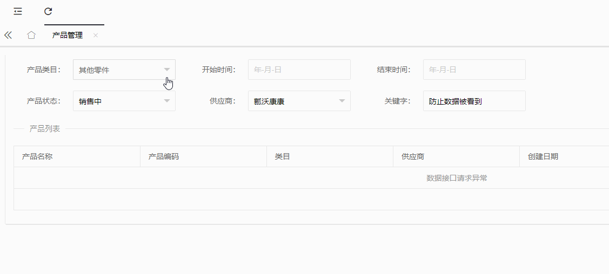

原文出处:本文由博客园博主心未鳴提供。
原文连接:https://www.cnblogs.com/xwma/p/10906541.html
原文连接:https://www.cnblogs.com/xwma/p/10906541.html
在昨天写的随笔中：
layui的tree和form同时引用出现冲突的粗略解决办法
提出有冲突，今天在开发中发现并不是这样的，他们并没有冲突！
依旧是昨天的代码，如下：
1 <div class="layui-inline">
2 <label class="layui-form-label">产品类目：</label>
3 <div class="layui-input-inline">
4 <div class="layui-unselect layui-form-select downpanel">
5 <div class="layui-select-title">
6 <span class="layui-input layui-unselect" id="treeclass">请选择</span>
7 <input type="hidden" name="category" id="category" value="0">
8 <i class="layui-edge"></i>
9 </div>
10 <dl class="layui-anim layui-anim-upbit">
11 <dd>
12 <ul id="classtree"></ul>
13 </dd>
14 </dl>
15 </div>
16 </div>
17 </div> 1 <div class="layui-inline">
2 <label class="layui-form-label">产品状态：</label>
3 <div class="layui-input-inline">
4 <select name="avtiveState" id="avtiveState" lay-filter="avtiveState">
5 <option value="0">请选择</option>
6 <option value="2">销售中</option>
7 <option value="3">停止销售</option>
8 <option value="1">已下架</option>
9 </select>
10 </div>
11 </div>

1 <textarea class="layui-hide" id="hidTree">[{"name":"发动机系统","spread":false,"href":null,"children":[{"name":"发动机系统","spread":false,"href":null,"children":[{"name":"皮带(链条)","spread":false,"href":null,"children":null,"id":1010101,"alias":null},{"name":"凸轮轴","spread":false,"href":null,"children":null,"id":1010102,"alias":null},{"name":"连杆","spread":false,"href":null,"children":null,"id":1010103,"alias":null},{"name":"曲轴箱","spread":false,"href":null,"children":null,"id":1010104,"alias":null},{"name":"曲轴","spread":false,"href":null,"children":null,"id":1010105,"alias":null},{"name":"汽缸","spread":false,"href":null,"children":null,"id":1010106,"alias":null},{"name":"汽缸垫片","spread":false,"href":null,"children":null,"id":1010107,"alias":null},{"name":"汽缸套","spread":false,"href":null,"children":null,"id":1010108,"alias":null},{"name":"汽缸体","spread":false,"href":null,"children":null,"id":1010109,"alias":null},{"name":"汽缸盖","spread":false,"href":null,"children":null,"id":1010110,"alias":null},{"name":"引擎脚","spread":false,"href":null,"children":null,"id":1010111,"alias":null},{"name":"飞轮","spread":false,"href":null,"children":null,"id":1010112,"alias":null},{"name":"活塞","spread":false,"href":null,"children":null,"id":1010113,"alias":null},{"name":"活塞销","spread":false,"href":null,"children":null,"id":1010114,"alias":null},{"name":"活塞环","spread":false,"href":null,"children":null,"id":1010115,"alias":null},{"name":"皮带盘(滑轮组)","spread":false,"href":null,"children":null,"id":1010116,"alias":null},{"name":"推杆","spread":false,"href":null,"children":null,"id":1010117,"alias":null},{"name":"摇臂","spread":false,"href":null,"children":null,"id":1010118,"alias":null},{"name":"摇臂轴","spread":false,"href":null,"children":null,"id":1010119,"alias":null},{"name":"张紧轮","spread":false,"href":null,"children":null,"id":1010120,"alias":null},{"name":"正时皮带(链条)护罩","spread":false,"href":null,"children":null,"id":1010121,"alias":null},{"name":"正时齿轮","spread":false,"href":null,"children":null,"id":1010122,"alias":null},{"name":"汽门","spread":false,"href":null,"children":null,"id":1010123,"alias":null},{"name":"汽门座","spread":false,"href":null,"children":null,"id":1010124,"alias":null},{"name":"汽门间隙调整螺栓螺帽","spread":false,"href":null,"children":null,"id":1010125,"alias":null},{"name":"汽门锁夹","spread":false,"href":null,"children":null,"id":1010126,"alias":null},{"name":"汽门导管","spread":false,"href":null,"children":null,"id":1010127,"alias":null},{"name":"汽门举杆","spread":false,"href":null,"children":null,"id":1010128,"alias":null},{"name":"汽门弹簧","spread":false,"href":null,"children":null,"id":1010129,"alias":null}],"id":10101,"alias":null},{"name":"燃油系统","spread":false,"href":null,"children":[{"name":"加速踏板","spread":false,"href":null,"children":null,"id":1010201,"alias":null},{"name":"空气滤清器总成","spread":false,"href":null,"children":null,"id":1010202,"alias":null},{"name":"空气流量计","spread":false,"href":null,"children":null,"id":1010203,"alias":null},{"name":"活性炭罐","spread":false,"href":null,"children":null,"id":1010204,"alias":null},{"name":"化油器总成","spread":false,"href":null,"children":null,"id":1010205,"alias":null},{"name":"催化净化器","spread":false,"href":null,"children":null,"id":1010206,"alias":null},{"name":"差压阀","spread":false,"href":null,"children":null,"id":1010207,"alias":null},{"name":"废气回收管","spread":false,"href":null,"children":null,"id":1010208,"alias":null},{"name":"废气回收阀","spread":false,"href":null,"children":null,"id":1010209,"alias":null},{"name":"加油管","spread":false,"href":null,"children":null,"id":1010210,"alias":null},{"name":"燃油蓄压器","spread":false,"href":null,"children":null,"id":1010211,"alias":null},{"name":"然油分配器","spread":false,"href":null,"children":null,"id":1010212,"alias":null},{"name":"燃油滤清器","spread":false,"href":null,"children":null,"id":1010213,"alias":null},{"name":"油管","spread":false,"href":null,"children":null,"id":1010214,"alias":null},{"name":"燃油泵总成","spread":false,"href":null,"children":null,"id":1010215,"alias":null},{"name":"燃油葙总成","spread":false,"href":null,"children":null,"id":1010216,"alias":null},{"name":"油箱盖","spread":false,"href":null,"children":null,"id":1010217,"alias":null},{"name":"喷油嘴","spread":false,"href":null,"children":null,"id":1010218,"alias":null},{"name":"喷油器","spread":false,"href":null,"children":null,"id":1010219,"alias":null},{"name":"进排气歧管","spread":false,"href":null,"children":null,"id":1010220,"alias":null},{"name":"消音器","spread":false,"href":null,"children":null,"id":1010221,"alias":null},{"name":"压力调节器","spread":false,"href":null,"children":null,"id":1010222,"alias":null},{"name":"鼓风机增压气","spread":false,"href":null,"children":null,"id":1010223,"alias":null},{"name":"节气门","spread":false,"href":null,"children":null,"id":1010224,"alias":null},{"name":"涡轮增压气","spread":false,"href":null,"children":null,"id":1010225,"alias":null}],"id":10102,"alias":null},{"name":"冷却系统","spread":false,"href":null,"children":[{"name":"风扇护罩","spread":false,"href":null,"children":null,"id":1010301,"alias":null},{"name":"膨胀水箱盖","spread":false,"href":null,"children":null,"id":1010302,"alias":null},{"name":"膨胀水箱","spread":false,"href":null,"children":null,"id":1010303,"alias":null},{"name":"风扇","spread":false,"href":null,"children":null,"id":1010304,"alias":null},{"name":"风扇皮带","spread":false,"href":null,"children":null,"id":1010305,"alias":null},{"name":"风扇页","spread":false,"href":null,"children":null,"id":1010306,"alias":null},{"name":"风扇离合器","spread":false,"href":null,"children":null,"id":1010307,"alias":null},{"name":"风扇支架","spread":false,"href":null,"children":null,"id":1010308,"alias":null},{"name":"暖风机","spread":false,"href":null,"children":null,"id":1010309,"alias":null},{"name":"水管","spread":false,"href":null,"children":null,"id":1010310,"alias":null},{"name":"皮带盘(滑轮组)","spread":false,"href":null,"children":null,"id":1010311,"alias":null},{"name":"散热器总成","spread":false,"href":null,"children":null,"id":1010312,"alias":null},{"name":"散热器盖","spread":false,"href":null,"children":null,"id":1010313,"alias":null},{"name":"散热器蕊子","spread":false,"href":null,"children":null,"id":1010314,"alias":null},{"name":"散热器风扇","spread":false,"href":null,"children":null,"id":1010315,"alias":null},{"name":"散热器软管","spread":false,"href":null,"children":null,"id":1010316,"alias":null},{"name":"压力式散热器盖","spread":false,"href":null,"children":null,"id":1010317,"alias":null},{"name":"膨胀箱盖","spread":false,"href":null,"children":null,"id":1010318,"alias":null},{"name":"膨胀箱","spread":false,"href":null,"children":null,"id":1010319,"alias":null},{"name":"限压阀管","spread":false,"href":null,"children":null,"id":1010320,"alias":null},{"name":"节温器","spread":false,"href":null,"children":null,"id":1010321,"alias":null},{"name":"节温器盖","spread":false,"href":null,"children":null,"id":1010322,"alias":null},{"name":"冷却水套","spread":false,"href":null,"children":null,"id":1010323,"alias":null},{"name":"加水盖","spread":false,"href":null,"children":null,"id":1010324,"alias":null},{"name":"水泵总成","spread":false,"href":null,"children":null,"id":1010325,"alias":null},{"name":"水箱","spread":false,"href":null,"children":null,"id":1010326,"alias":null}],"id":10103,"alias":null},{"name":"润滑系统","spread":false,"href":null,"children":[{"name":"回油关闭阀","spread":false,"href":null,"children":null,"id":1010401,"alias":null},{"name":"机油泵驱动链条","spread":false,"href":null,"children":null,"id":1010402,"alias":null},{"name":"机油冷却器","spread":false,"href":null,"children":null,"id":1010403,"alias":null},{"name":"机油尺软管","spread":false,"href":null,"children":null,"id":1010404,"alias":null},{"name":"排油塞","spread":false,"href":null,"children":null,"id":1010405,"alias":null},{"name":"机油滤清器","spread":false,"href":null,"children":null,"id":1010406,"alias":null},{"name":"机油盖","spread":false,"href":null,"children":null,"id":1010407,"alias":null},{"name":"油道","spread":false,"href":null,"children":null,"id":1010408,"alias":null},{"name":"机油尺","spread":false,"href":null,"children":null,"id":1010409,"alias":null},{"name":"油底壳","spread":false,"href":null,"children":null,"id":1010410,"alias":null},{"name":"机油泵","spread":false,"href":null,"children":null,"id":1010411,"alias":null},{"name":"油泵总成","spread":false,"href":null,"children":null,"id":1010412,"alias":null},{"name":"机油滤网","spread":false,"href":null,"children":null,"id":1010413,"alias":null},{"name":"过压阀","spread":false,"href":null,"children":null,"id":1010414,"alias":null},{"name":"压力调整阀","spread":false,"href":null,"children":null,"id":1010415,"alias":null}],"id":10104,"alias":null}],"id":101,"alias":null},{"name":"车身与底盘系统","spread":false,"href":null,"children":[{"name":"转向系统","spread":false,"href":null,"children":[{"name":"球接头","spread":false,"href":null,"children":null,"id":1020101,"alias":null},{"name":"中心杆","spread":false,"href":null,"children":null,"id":1020102,"alias":null},{"name":"控制阀总成","spread":false,"href":null,"children":null,"id":1020103,"alias":null},{"name":"直拉杆","spread":false,"href":null,"children":null,"id":1020104,"alias":null},{"name":"挠性联结轴","spread":false,"href":null,"children":null,"id":1020105,"alias":null},{"name":"液压管路","spread":false,"href":null,"children":null,"id":1020106,"alias":null},{"name":"惰臂","spread":false,"href":null,"children":null,"id":1020107,"alias":null},{"name":"大王肖","spread":false,"href":null,"children":null,"id":1020108,"alias":null},{"name":"动力方向助力泵","spread":false,"href":null,"children":null,"id":1020109,"alias":null},{"name":"齿条与小齿轮","spread":false,"href":null,"children":null,"id":1020110,"alias":null},{"name":"齿排端","spread":false,"href":null,"children":null,"id":1020111,"alias":null},{"name":"横拉杆接头","spread":false,"href":null,"children":null,"id":1020112,"alias":null},{"name":"转向柱","spread":false,"href":null,"children":null,"id":1020113,"alias":null},{"name":"转向器","spread":false,"href":null,"children":null,"id":1020114,"alias":null},{"name":"转向臂","spread":false,"href":null,"children":null,"id":1020115,"alias":null},{"name":"转向惰轮总成","spread":false,"href":null,"children":null,"id":1020116,"alias":null},{"name":"转向连杆","spread":false,"href":null,"children":null,"id":1020117,"alias":null},{"name":"转向轴","spread":false,"href":null,"children":null,"id":1020118,"alias":null},{"name":"横拉杆","spread":false,"href":null,"children":null,"id":1020119,"alias":null},{"name":"转向盘","spread":false,"href":null,"children":null,"id":1020120,"alias":null},{"name":"叶片泵","spread":false,"href":null,"children":null,"id":1020121,"alias":null}],"id":10201,"alias":null},{"name":"轮胎与车轮","spread":false,"href":null,"children":[{"name":"气嘴","spread":false,"href":null,"children":null,"id":1020201,"alias":null},{"name":"外胎","spread":false,"href":null,"children":null,"id":1020202,"alias":null},{"name":"铝合金车轮","spread":false,"href":null,"children":null,"id":1020203,"alias":null},{"name":"轮毂盖","spread":false,"href":null,"children":null,"id":1020204,"alias":null},{"name":"内胎","spread":false,"href":null,"children":null,"id":1020205,"alias":null},{"name":"轮胎","spread":false,"href":null,"children":null,"id":1020206,"alias":null},{"name":"轮盖","spread":false,"href":null,"children":null,"id":1020207,"alias":null},{"name":"轮毂","spread":false,"href":null,"children":null,"id":1020208,"alias":null},{"name":"轮辋","spread":false,"href":null,"children":null,"id":1020209,"alias":null},{"name":"钢丝式车轮","spread":false,"href":null,"children":null,"id":1020210,"alias":null}],"id":10202,"alias":null},{"name":"车轮校正","spread":false,"href":null,"children":[{"name":"车轮校正","spread":false,"href":null,"children":null,"id":1020301,"alias":null}],"id":10203,"alias":null},{"name":"悬吊系统","spread":false,"href":null,"children":[{"name":"球接头","spread":false,"href":null,"children":null,"id":1020401,"alias":null},{"name":"轴衬","spread":false,"href":null,"children":null,"id":1020402,"alias":null},{"name":"圈状弹簧","spread":false,"href":null,"children":null,"id":1020403,"alias":null},{"name":"控制臂轴","spread":false,"href":null,"children":null,"id":1020404,"alias":null},{"name":"控制臂","spread":false,"href":null,"children":null,"id":1020405,"alias":null},{"name":"横梁","spread":false,"href":null,"children":null,"id":1020406,"alias":null},{"name":"转向节 ","spread":false,"href":null,"children":null,"id":1020407,"alias":null},{"name":"转向节臂","spread":false,"href":null,"children":null,"id":1020408,"alias":null},{"name":"减震器","spread":false,"href":null,"children":null,"id":1020409,"alias":null},{"name":"弹簧座","spread":false,"href":null,"children":null,"id":1020410,"alias":null},{"name":"稳定杆","spread":false,"href":null,"children":null,"id":1020411,"alias":null},{"name":"张力杆","spread":false,"href":null,"children":null,"id":1020412,"alias":null},{"name":"悬吊系统","spread":false,"href":null,"children":null,"id":1020413,"alias":null},{"name":"摇臂","spread":false,"href":null,"children":null,"id":1020414,"alias":null}],"id":10204,"alias":null},{"name":"制动系统","spread":false,"href":null,"children":[{"name":"调整器","spread":false,"href":null,"children":null,"id":1020501,"alias":null},{"name":"贮气箱","spread":false,"href":null,"children":null,"id":1020502,"alias":null},{"name":"支撑销","spread":false,"href":null,"children":null,"id":1020503,"alias":null},{"name":"助力器","spread":false,"href":null,"children":null,"id":1020504,"alias":null},{"name":"刹车线","spread":false,"href":null,"children":null,"id":1020505,"alias":null},{"name":"制动钳、刹车钳","spread":false,"href":null,"children":null,"id":1020506,"alias":null},{"name":"制动室","spread":false,"href":null,"children":null,"id":1020507,"alias":null},{"name":"制动碟盘、刹车盘、刹车碟","spread":false,"href":null,"children":null,"id":1020508,"alias":null},{"name":"制动鼓","spread":false,"href":null,"children":null,"id":1020509,"alias":null},{"name":"刹车软管","spread":false,"href":null,"children":null,"id":1020510,"alias":null},{"name":"制动油管、制动管路、刹车管路","spread":false,"href":null,"children":null,"id":1020511,"alias":null},{"name":"制动来令","spread":false,"href":null,"children":null,"id":1020512,"alias":null},{"name":"制动主缸、刹车总泵","spread":false,"href":null,"children":null,"id":1020513,"alias":null},{"name":"制动垫片\\刹车片、制动衬块","spread":false,"href":null,"children":null,"id":1020514,"alias":null},{"name":"制动底板","spread":false,"href":null,"children":null,"id":1020515,"alias":null},{"name":"制动蹄\\刹车蹄","spread":false,"href":null,"children":null,"id":1020516,"alias":null},{"name":"制动分缸、刹车分泵","spread":false,"href":null,"children":null,"id":1020517,"alias":null},{"name":"拉绳","spread":false,"href":null,"children":null,"id":1020518,"alias":null},{"name":"拉绳支架","spread":false,"href":null,"children":null,"id":1020519,"alias":null},{"name":"操纵杆","spread":false,"href":null,"children":null,"id":1020520,"alias":null},{"name":"油压缸与活塞","spread":false,"href":null,"children":null,"id":1020521,"alias":null},{"name":"平衡臂","spread":false,"href":null,"children":null,"id":1020522,"alias":null},{"name":"固定钳","spread":false,"href":null,"children":null,"id":1020523,"alias":null},{"name":"浮钳","spread":false,"href":null,"children":null,"id":1020524,"alias":null},{"name":"摩擦片","spread":false,"href":null,"children":null,"id":1020525,"alias":null},{"name":"导销","spread":false,"href":null,"children":null,"id":1020526,"alias":null},{"name":"液压","spread":false,"href":null,"children":null,"id":1020527,"alias":null},{"name":"领蹄","spread":false,"href":null,"children":null,"id":1020528,"alias":null},{"name":"低压警告器","spread":false,"href":null,"children":null,"id":1020529,"alias":null},{"name":"手制动拉索","spread":false,"href":null,"children":null,"id":1020530,"alias":null},{"name":"手制动拉杆","spread":false,"href":null,"children":null,"id":1020531,"alias":null},{"name":"制动踏板","spread":false,"href":null,"children":null,"id":1020532,"alias":null},{"name":"压力真空罐","spread":false,"href":null,"children":null,"id":1020533,"alias":null},{"name":"比列阀","spread":false,"href":null,"children":null,"id":1020534,"alias":null},{"name":"棘爪","spread":false,"href":null,"children":null,"id":1020535,"alias":null},{"name":"棘爪拦杆","spread":false,"href":null,"children":null,"id":1020536,"alias":null},{"name":"调整器","spread":false,"href":null,"children":null,"id":1020537,"alias":null},{"name":"释放按钮","spread":false,"href":null,"children":null,"id":1020538,"alias":null},{"name":"释放杆","spread":false,"href":null,"children":null,"id":1020539,"alias":null},{"name":"复位弹簧","spread":false,"href":null,"children":null,"id":1020540,"alias":null},{"name":"蹄片定位锁","spread":false,"href":null,"children":null,"id":1020541,"alias":null},{"name":"导向销","spread":false,"href":null,"children":null,"id":1020542,"alias":null},{"name":"隔套","spread":false,"href":null,"children":null,"id":1020543,"alias":null},{"name":"弹簧锁扣","spread":false,"href":null,"children":null,"id":1020544,"alias":null},{"name":"从蹄","spread":false,"href":null,"children":null,"id":1020545,"alias":null},{"name":"刹车助力泵","spread":false,"href":null,"children":null,"id":1020546,"alias":null},{"name":"控制阀组","spread":false,"href":null,"children":null,"id":1020547,"alias":null},{"name":"轮缸","spread":false,"href":null,"children":null,"id":1020548,"alias":null},{"name":"车轮紧固螺栓","spread":false,"href":null,"children":null,"id":1020549,"alias":null}],"id":10205,"alias":null}],"id":102,"alias":null},{"name":"电系","spread":false,"href":null,"children":[{"name":"蓄电池","spread":false,"href":null,"children":[{"name":"蓄电池","spread":false,"href":null,"children":null,"id":1030101,"alias":null}],"id":10301,"alias":null},{"name":"点火系统","spread":false,"href":null,"children":[{"name":"电容器","spread":false,"href":null,"children":null,"id":1030201,"alias":null},{"name":"分电盘总成","spread":false,"href":null,"children":null,"id":1030202,"alias":null},{"name":"分电盘盖","spread":false,"href":null,"children":null,"id":1030203,"alias":null},{"name":"外阻电","spread":false,"href":null,"children":null,"id":1030204,"alias":null},{"name":"点火线圈","spread":false,"href":null,"children":null,"id":1030205,"alias":null},{"name":"点火开关","spread":false,"href":null,"children":null,"id":1030206,"alias":null},{"name":"分火头","spread":false,"href":null,"children":null,"id":1030207,"alias":null},{"name":"高压线","spread":false,"href":null,"children":null,"id":1030208,"alias":null},{"name":"火花塞/预热塞","spread":false,"href":null,"children":null,"id":1030209,"alias":null},{"name":"起动续电器","spread":false,"href":null,"children":null,"id":1030210,"alias":null}],"id":10302,"alias":null},{"name":"起动系统","spread":false,"href":null,"children":[{"name":"电枢","spread":false,"href":null,"children":null,"id":1030301,"alias":null},{"name":"蓄电池桩头","spread":false,"href":null,"children":null,"id":1030302,"alias":null},{"name":"接触板","spread":false,"href":null,"children":null,"id":1030303,"alias":null},{"name":"端盖","spread":false,"href":null,"children":null,"id":1030304,"alias":null},{"name":"磁场线圈","spread":false,"href":null,"children":null,"id":1030305,"alias":null},{"name":"磁场框架","spread":false,"href":null,"children":null,"id":1030306,"alias":null},{"name":"惰轮","spread":false,"href":null,"children":null,"id":1030307,"alias":null},{"name":"电磁开关","spread":false,"href":null,"children":null,"id":1030308,"alias":null},{"name":"O型圈","spread":false,"href":null,"children":null,"id":1030309,"alias":null},{"name":"后轴承","spread":false,"href":null,"children":null,"id":1030310,"alias":null},{"name":"起动电机总成","spread":false,"href":null,"children":null,"id":1030311,"alias":null},{"name":"起动机离合器","spread":false,"href":null,"children":null,"id":1030312,"alias":null},{"name":"起动安全开关","spread":false,"href":null,"children":null,"id":1030313,"alias":null},{"name":"钢球","spread":false,"href":null,"children":null,"id":1030314,"alias":null},{"name":"单向齿","spread":false,"href":null,"children":null,"id":1030315,"alias":null},{"name":"起动机壳体","spread":false,"href":null,"children":null,"id":1030316,"alias":null},{"name":"30端子套件","spread":false,"href":null,"children":null,"id":1030317,"alias":null},{"name":"端子绝缘体","spread":false,"href":null,"children":null,"id":1030318,"alias":null},{"name":"波形垫圈","spread":false,"href":null,"children":null,"id":1030319,"alias":null},{"name":"线束","spread":false,"href":null,"children":null,"id":1030320,"alias":null}],"id":10303,"alias":null},{"name":"充电系列","spread":false,"href":null,"children":[{"name":"发电机总成","spread":false,"href":null,"children":null,"id":1030401,"alias":null},{"name":"调整器","spread":false,"href":null,"children":null,"id":1030402,"alias":null}],"id":10304,"alias":null},{"name":"灯光系统与喇叭","spread":false,"href":null,"children":[{"name":"倒车灯","spread":false,"href":null,"children":null,"id":1030501,"alias":null},{"name":"灯泡","spread":false,"href":null,"children":null,"id":1030502,"alias":null},{"name":"保险杠灯","spread":false,"href":null,"children":null,"id":1030503,"alias":null},{"name":"中央高位制动灯","spread":false,"href":null,"children":null,"id":1030504,"alias":null},{"name":"角灯玻璃","spread":false,"href":null,"children":null,"id":1030505,"alias":null},{"name":"角灯","spread":false,"href":null,"children":null,"id":1030506,"alias":null},{"name":"车顶灯","spread":false,"href":null,"children":null,"id":1030507,"alias":null},{"name":"车门灯","spread":false,"href":null,"children":null,"id":1030508,"alias":null},{"name":"车边(辐)灯","spread":false,"href":null,"children":null,"id":1030509,"alias":null},{"name":"雾灯","spread":false,"href":null,"children":null,"id":1030510,"alias":null},{"name":"雾灯片","spread":false,"href":null,"children":null,"id":1030511,"alias":null},{"name":"头灯/大灯","spread":false,"href":null,"children":null,"id":1030512,"alias":null},{"name":"大灯支架","spread":false,"href":null,"children":null,"id":1030513,"alias":null},{"name":"大灯玻璃","spread":false,"href":null,"children":null,"id":1030514,"alias":null},{"name":"氙气灯","spread":false,"href":null,"children":null,"id":1030515,"alias":null},{"name":"喇叭","spread":false,"href":null,"children":null,"id":1030516,"alias":null},{"name":"LED灯","spread":false,"href":null,"children":null,"id":1030517,"alias":null},{"name":"牌照灯","spread":false,"href":null,"children":null,"id":1030518,"alias":null},{"name":"驻车灯","spread":false,"href":null,"children":null,"id":1030519,"alias":null},{"name":"阅读灯","spread":false,"href":null,"children":null,"id":1030520,"alias":null},{"name":"后组合灯","spread":false,"href":null,"children":null,"id":1030521,"alias":null},{"name":"室内灯","spread":false,"href":null,"children":null,"id":1030522,"alias":null},{"name":"制动灯","spread":false,"href":null,"children":null,"id":1030523,"alias":null},{"name":"尾灯","spread":false,"href":null,"children":null,"id":1030524,"alias":null},{"name":"尾灯玻璃","spread":false,"href":null,"children":null,"id":1030525,"alias":null},{"name":"第三制动灯","spread":false,"href":null,"children":null,"id":1030526,"alias":null},{"name":"行李箱灯","spread":false,"href":null,"children":null,"id":1030527,"alias":null},{"name":"转向灯","spread":false,"href":null,"children":null,"id":1030528,"alias":null},{"name":"梳妆灯","spread":false,"href":null,"children":null,"id":1030529,"alias":null},{"name":"警告灯","spread":false,"href":null,"children":null,"id":1030530,"alias":null}],"id":10305,"alias":null},{"name":"仪表板","spread":false,"href":null,"children":[{"name":"冷却液温度表及信号灯","spread":false,"href":null,"children":null,"id":1030601,"alias":null},{"name":"数字时钟","spread":false,"href":null,"children":null,"id":1030602,"alias":null},{"name":"发动机转速表","spread":false,"href":null,"children":null,"id":1030603,"alias":null},{"name":"仪表框","spread":false,"href":null,"children":null,"id":1030604,"alias":null},{"name":"燃油表及信号灯","spread":false,"href":null,"children":null,"id":1030605,"alias":null},{"name":"指示灯","spread":false,"href":null,"children":null,"id":1030606,"alias":null},{"name":"里程表","spread":false,"href":null,"children":null,"id":1030607,"alias":null},{"name":"导光板","spread":false,"href":null,"children":null,"id":1030608,"alias":null},{"name":"线路板","spread":false,"href":null,"children":null,"id":1030609,"alias":null},{"name":"后盖","spread":false,"href":null,"children":null,"id":1030610,"alias":null},{"name":"数字时钟调整钮","spread":false,"href":null,"children":null,"id":1030611,"alias":null},{"name":"车速表","spread":false,"href":null,"children":null,"id":1030612,"alias":null},{"name":"转速表","spread":false,"href":null,"children":null,"id":1030613,"alias":null},{"name":"透明护板","spread":false,"href":null,"children":null,"id":1030614,"alias":null},{"name":"警告指示灯","spread":false,"href":null,"children":null,"id":1030615,"alias":null}],"id":10306,"alias":null},{"name":"刮水与清洗系统","spread":false,"href":null,"children":[{"name":"连杆","spread":false,"href":null,"children":null,"id":1030701,"alias":null},{"name":"电机臂","spread":false,"href":null,"children":null,"id":1030702,"alias":null},{"name":"电机架","spread":false,"href":null,"children":null,"id":1030703,"alias":null},{"name":"枢轴","spread":false,"href":null,"children":null,"id":1030704,"alias":null},{"name":"刮水器","spread":false,"href":null,"children":null,"id":1030705,"alias":null},{"name":"刮水电机","spread":false,"href":null,"children":null,"id":1030706,"alias":null},{"name":"请洗器","spread":false,"href":null,"children":null,"id":1030707,"alias":null},{"name":"储水箱","spread":false,"href":null,"children":null,"id":1030708,"alias":null},{"name":"喷水器电机","spread":false,"href":null,"children":null,"id":1030709,"alias":null},{"name":"刮水臂","spread":false,"href":null,"children":null,"id":1030710,"alias":null},{"name":"刮水片","spread":false,"href":null,"children":null,"id":1030711,"alias":null}],"id":10307,"alias":null},{"name":"暖风与空调系统","spread":false,"href":null,"children":[{"name":"空调压缩机","spread":false,"href":null,"children":null,"id":1030801,"alias":null},{"name":"鼓风机","spread":false,"href":null,"children":null,"id":1030802,"alias":null},{"name":"冷凝器","spread":false,"href":null,"children":null,"id":1030803,"alias":null},{"name":"蒸发器","spread":false,"href":null,"children":null,"id":1030804,"alias":null},{"name":"膨胀阀","spread":false,"href":null,"children":null,"id":1030805,"alias":null},{"name":"热交换器","spread":false,"href":null,"children":null,"id":1030806,"alias":null},{"name":"暖风阀","spread":false,"href":null,"children":null,"id":1030807,"alias":null},{"name":"冷煤管","spread":false,"href":null,"children":null,"id":1030808,"alias":null},{"name":"储液干燥器","spread":false,"href":null,"children":null,"id":1030809,"alias":null},{"name":"真空阀","spread":false,"href":null,"children":null,"id":1030810,"alias":null}],"id":10308,"alias":null},{"name":"视听影音娱乐/导航系统","spread":false,"href":null,"children":[{"name":"音响系统","spread":false,"href":null,"children":null,"id":1030901,"alias":null},{"name":"通讯","spread":false,"href":null,"children":null,"id":1030902,"alias":null},{"name":"卫星导航系统","spread":false,"href":null,"children":null,"id":1030903,"alias":null},{"name":"电视系统","spread":false,"href":null,"children":null,"id":1030904,"alias":null}],"id":10309,"alias":null},{"name":"电子零件","spread":false,"href":null,"children":[{"name":"汽车钥匙","spread":false,"href":null,"children":null,"id":1031001,"alias":null},{"name":"点烟器","spread":false,"href":null,"children":null,"id":1031002,"alias":null},{"name":"组合开关","spread":false,"href":null,"children":null,"id":1031003,"alias":null},{"name":"连接器","spread":false,"href":null,"children":null,"id":1031004,"alias":null},{"name":"闪光器","spread":false,"href":null,"children":null,"id":1031005,"alias":null},{"name":"保险丝","spread":false,"href":null,"children":null,"id":1031006,"alias":null},{"name":"保险丝盒","spread":false,"href":null,"children":null,"id":1031007,"alias":null},{"name":"调压器总成","spread":false,"href":null,"children":null,"id":1031008,"alias":null},{"name":"电机","spread":false,"href":null,"children":null,"id":1031009,"alias":null},{"name":"换向器","spread":false,"href":null,"children":null,"id":1031010,"alias":null},{"name":"续电器","spread":false,"href":null,"children":null,"id":1031011,"alias":null},{"name":"雷达","spread":false,"href":null,"children":null,"id":1031012,"alias":null},{"name":"传感器和执行器","spread":false,"href":null,"children":null,"id":1031013,"alias":null},{"name":"电磁阀","spread":false,"href":null,"children":null,"id":1031014,"alias":null},{"name":"开关","spread":false,"href":null,"children":null,"id":1031015,"alias":null},{"name":"端子","spread":false,"href":null,"children":null,"id":1031016,"alias":null}],"id":10310,"alias":null},{"name":"电子控制元件","spread":false,"href":null,"children":[{"name":"制动防抱死系统","spread":false,"href":null,"children":null,"id":1031101,"alias":null},{"name":"循迹控制系统","spread":false,"href":null,"children":null,"id":1031102,"alias":null},{"name":"自动恒温控制","spread":false,"href":null,"children":null,"id":1031103,"alias":null},{"name":"防暴冲装置","spread":false,"href":null,"children":null,"id":1031104,"alias":null},{"name":"车身控制电脑","spread":false,"href":null,"children":null,"id":1031105,"alias":null},{"name":"中央控制锁","spread":false,"href":null,"children":null,"id":1031106,"alias":null},{"name":"电子制动力分配系统","spread":false,"href":null,"children":null,"id":1031107,"alias":null},{"name":"制动辅助系统","spread":false,"href":null,"children":null,"id":1031108,"alias":null},{"name":"电子控制变速箱电脑","spread":false,"href":null,"children":null,"id":1031109,"alias":null},{"name":"发动机控制电脑","spread":false,"href":null,"children":null,"id":1031110,"alias":null},{"name":"蒸发废气控制系统","spread":false,"href":null,"children":null,"id":1031111,"alias":null},{"name":"废气再循环系统","spread":false,"href":null,"children":null,"id":1031112,"alias":null},{"name":"暖风及冷气控制电脑","spread":false,"href":null,"children":null,"id":1031113,"alias":null},{"name":"点火控制模组","spread":false,"href":null,"children":null,"id":1031114,"alias":null},{"name":"仪表电脑","spread":false,"href":null,"children":null,"id":1031115,"alias":null},{"name":"安全气囊系统","spread":false,"href":null,"children":null,"id":1031116,"alias":null},{"name":"悬吊系统电脑","spread":false,"href":null,"children":null,"id":1031117,"alias":null},{"name":"车辆稳定性控制系统","spread":false,"href":null,"children":null,"id":1031118,"alias":null}],"id":10311,"alias":null}],"id":103,"alias":null},{"name":"传动系统","spread":false,"href":null,"children":[{"name":"离合器","spread":false,"href":null,"children":[{"name":"离合器盖板","spread":false,"href":null,"children":null,"id":1040101,"alias":null},{"name":"离合器主缸","spread":false,"href":null,"children":null,"id":1040102,"alias":null},{"name":"离合器踏板","spread":false,"href":null,"children":null,"id":1040103,"alias":null},{"name":"离合器工作缸","spread":false,"href":null,"children":null,"id":1040104,"alias":null},{"name":"离合器弹簧","spread":false,"href":null,"children":null,"id":1040105,"alias":null},{"name":"离合器从动盘","spread":false,"href":null,"children":null,"id":1040106,"alias":null},{"name":"摩擦片","spread":false,"href":null,"children":null,"id":1040107,"alias":null},{"name":"高压油管","spread":false,"href":null,"children":null,"id":1040108,"alias":null},{"name":"离合器压盘","spread":false,"href":null,"children":null,"id":1040109,"alias":null},{"name":"推杆","spread":false,"href":null,"children":null,"id":1040110,"alias":null},{"name":"离合分离轴承","spread":false,"href":null,"children":null,"id":1040111,"alias":null},{"name":"分离拨叉","spread":false,"href":null,"children":null,"id":1040112,"alias":null},{"name":"分离杆","spread":false,"href":null,"children":null,"id":1040113,"alias":null},{"name":"踏板翻转复原机构","spread":false,"href":null,"children":null,"id":1040114,"alias":null}],"id":10401,"alias":null},{"name":"变速器","spread":false,"href":null,"children":[{"name":"加速踏板","spread":false,"href":null,"children":null,"id":1040201,"alias":null},{"name":"油门线","spread":false,"href":null,"children":null,"id":1040202,"alias":null},{"name":"固定块","spread":false,"href":null,"children":null,"id":1040203,"alias":null},{"name":"制动带","spread":false,"href":null,"children":null,"id":1040204,"alias":null},{"name":"锁环","spread":false,"href":null,"children":null,"id":1040205,"alias":null},{"name":"离合器轴","spread":false,"href":null,"children":null,"id":1040206,"alias":null},{"name":"副轴","spread":false,"href":null,"children":null,"id":1040207,"alias":null},{"name":"速控器阀","spread":false,"href":null,"children":null,"id":1040208,"alias":null},{"name":"导销","spread":false,"href":null,"children":null,"id":1040209,"alias":null},{"name":"主轴(输出轴)","spread":false,"href":null,"children":null,"id":1040210,"alias":null},{"name":"行星齿轮系统","spread":false,"href":null,"children":null,"id":1040211,"alias":null},{"name":"倒档齿轮","spread":false,"href":null,"children":null,"id":1040212,"alias":null},{"name":"换档阀","spread":false,"href":null,"children":null,"id":1040213,"alias":null},{"name":"排挡杆","spread":false,"href":null,"children":null,"id":1040214,"alias":null},{"name":"同步齿套","spread":false,"href":null,"children":null,"id":1040215,"alias":null},{"name":"变速齿轮","spread":false,"href":null,"children":null,"id":1040216,"alias":null},{"name":"同步齿壳","spread":false,"href":null,"children":null,"id":1040217,"alias":null},{"name":"调速键","spread":false,"href":null,"children":null,"id":1040218,"alias":null},{"name":"同步销","spread":false,"href":null,"children":null,"id":1040219,"alias":null},{"name":"调速铜环","spread":false,"href":null,"children":null,"id":1040220,"alias":null},{"name":"节气门阀","spread":false,"href":null,"children":null,"id":1040221,"alias":null},{"name":"节气门","spread":false,"href":null,"children":null,"id":1040222,"alias":null},{"name":"节气门拉锁","spread":false,"href":null,"children":null,"id":1040223,"alias":null},{"name":"推力块","spread":false,"href":null,"children":null,"id":1040224,"alias":null},{"name":"扭力变速器","spread":false,"href":null,"children":null,"id":1040225,"alias":null},{"name":"变速齿壳","spread":false,"href":null,"children":null,"id":1040226,"alias":null}],"id":10402,"alias":null},{"name":"传动轴总成","spread":false,"href":null,"children":[{"name":"平衡配重","spread":false,"href":null,"children":null,"id":1040301,"alias":null},{"name":"外球座","spread":false,"href":null,"children":null,"id":1040302,"alias":null},{"name":"球座与钢球","spread":false,"href":null,"children":null,"id":1040303,"alias":null},{"name":"十字(万向)接头","spread":false,"href":null,"children":null,"id":1040304,"alias":null},{"name":"传动轴 ","spread":false,"href":null,"children":null,"id":1040305,"alias":null},{"name":"凸缘接头","spread":false,"href":null,"children":null,"id":1040306,"alias":null},{"name":"内球座","spread":false,"href":null,"children":null,"id":1040307,"alias":null},{"name":"滑动接头","spread":false,"href":null,"children":null,"id":1040308,"alias":null},{"name":"万向接头","spread":false,"href":null,"children":null,"id":1040309,"alias":null},{"name":"黏性接合器","spread":false,"href":null,"children":null,"id":1040310,"alias":null},{"name":"轭","spread":false,"href":null,"children":null,"id":1040311,"alias":null}],"id":10403,"alias":null},{"name":"最终传动装置及差速器","spread":false,"href":null,"children":[{"name":"车轴","spread":false,"href":null,"children":null,"id":1040401,"alias":null},{"name":"从动锥齿轮","spread":false,"href":null,"children":null,"id":1040402,"alias":null},{"name":"茶速器","spread":false,"href":null,"children":null,"id":1040403,"alias":null},{"name":"茶速器壳","spread":false,"href":null,"children":null,"id":1040404,"alias":null},{"name":"差速器盖","spread":false,"href":null,"children":null,"id":1040405,"alias":null},{"name":"角尺齿轮/驱动齿轮","spread":false,"href":null,"children":null,"id":1040406,"alias":null},{"name":"侧齿轮","spread":false,"href":null,"children":null,"id":1040407,"alias":null},{"name":"侧齿轮套","spread":false,"href":null,"children":null,"id":1040408,"alias":null},{"name":"蜗齿轮","spread":false,"href":null,"children":null,"id":1040409,"alias":null}],"id":10404,"alias":null}],"id":104,"alias":null},{"name":"车身零件及配件","spread":false,"href":null,"children":[{"name":"车身零件 ","spread":false,"href":null,"children":[{"name":"车身","spread":false,"href":null,"children":null,"id":1050101,"alias":null},{"name":"支架","spread":false,"href":null,"children":null,"id":1050102,"alias":null},{"name":"保杆","spread":false,"href":null,"children":null,"id":1050103,"alias":null},{"name":"隔板","spread":false,"href":null,"children":null,"id":1050104,"alias":null},{"name":"车门","spread":false,"href":null,"children":null,"id":1050105,"alias":null},{"name":"发动机罩","spread":false,"href":null,"children":null,"id":1050106,"alias":null},{"name":"后翼子板","spread":false,"href":null,"children":null,"id":1050107,"alias":null},{"name":"地板","spread":false,"href":null,"children":null,"id":1050108,"alias":null},{"name":"车架","spread":false,"href":null,"children":null,"id":1050109,"alias":null},{"name":"前纵梁","spread":false,"href":null,"children":null,"id":1050110,"alias":null},{"name":"前围","spread":false,"href":null,"children":null,"id":1050111,"alias":null},{"name":"档泥板","spread":false,"href":null,"children":null,"id":1050112,"alias":null},{"name":"车柱","spread":false,"href":null,"children":null,"id":1050113,"alias":null},{"name":"补强板","spread":false,"href":null,"children":null,"id":1050114,"alias":null},{"name":"顶盖","spread":false,"href":null,"children":null,"id":1050115,"alias":null},{"name":"行李箱盖","spread":false,"href":null,"children":null,"id":1050116,"alias":null},{"name":"挡风玻璃","spread":false,"href":null,"children":null,"id":1050117,"alias":null}],"id":10501,"alias":null},{"name":"车门及附件","spread":false,"href":null,"children":[{"name":"角度杠杆 ","spread":false,"href":null,"children":null,"id":1050201,"alias":null},{"name":"後集控门锁电机","spread":false,"href":null,"children":null,"id":1050202,"alias":null},{"name":"後车门三角窗","spread":false,"href":null,"children":null,"id":1050203,"alias":null},{"name":"装饰性小箱","spread":false,"href":null,"children":null,"id":1050204,"alias":null},{"name":"门锁","spread":false,"href":null,"children":null,"id":1050205,"alias":null},{"name":"电动摇窗机开关","spread":false,"href":null,"children":null,"id":1050206,"alias":null},{"name":"把手","spread":false,"href":null,"children":null,"id":1050207,"alias":null},{"name":"线束孔","spread":false,"href":null,"children":null,"id":1050208,"alias":null},{"name":"车门铰链","spread":false,"href":null,"children":null,"id":1050209,"alias":null},{"name":"内扶手","spread":false,"href":null,"children":null,"id":1050210,"alias":null},{"name":"内拉手","spread":false,"href":null,"children":null,"id":1050211,"alias":null},{"name":"门锁锁定按钮","spread":false,"href":null,"children":null,"id":1050212,"alias":null},{"name":"长锁杆","spread":false,"href":null,"children":null,"id":1050213,"alias":null},{"name":"车门开度限位器","spread":false,"href":null,"children":null,"id":1050214,"alias":null},{"name":"後视镜","spread":false,"href":null,"children":null,"id":1050215,"alias":null},{"name":"外拉手开启销","spread":false,"href":null,"children":null,"id":1050216,"alias":null},{"name":"门锁开启拉杆","spread":false,"href":null,"children":null,"id":1050217,"alias":null},{"name":"短锁杆","spread":false,"href":null,"children":null,"id":1050218,"alias":null},{"name":"窗玻璃托槽","spread":false,"href":null,"children":null,"id":1050219,"alias":null},{"name":"车门窗玻璃","spread":false,"href":null,"children":null,"id":1050220,"alias":null},{"name":"车门摇窗机","spread":false,"href":null,"children":null,"id":1050221,"alias":null}],"id":10502,"alias":null},{"name":"内饰件","spread":false,"href":null,"children":[{"name":"座椅前后位置调节手柄","spread":false,"href":null,"children":null,"id":1050301,"alias":null},{"name":"靠背角度调节旋钮","spread":false,"href":null,"children":null,"id":1050302,"alias":null},{"name":"座椅前后位置调节机构","spread":false,"href":null,"children":null,"id":1050303,"alias":null},{"name":"扶手","spread":false,"href":null,"children":null,"id":1050304,"alias":null},{"name":"安全带锁扣","spread":false,"href":null,"children":null,"id":1050305,"alias":null},{"name":"坐垫支座","spread":false,"href":null,"children":null,"id":1050306,"alias":null},{"name":"地毯","spread":false,"href":null,"children":null,"id":1050307,"alias":null},{"name":"变速杆手球","spread":false,"href":null,"children":null,"id":1050308,"alias":null},{"name":"头枕","spread":false,"href":null,"children":null,"id":1050309,"alias":null},{"name":"仪表板","spread":false,"href":null,"children":null,"id":1050310,"alias":null},{"name":"车门拉手","spread":false,"href":null,"children":null,"id":1050311,"alias":null},{"name":"後视镜","spread":false,"href":null,"children":null,"id":1050312,"alias":null},{"name":"座椅","spread":false,"href":null,"children":null,"id":1050313,"alias":null},{"name":"安全带","spread":false,"href":null,"children":null,"id":1050314,"alias":null},{"name":"坐垫","spread":false,"href":null,"children":null,"id":1050315,"alias":null},{"name":"座椅靠背","spread":false,"href":null,"children":null,"id":1050316,"alias":null},{"name":"转向盘","spread":false,"href":null,"children":null,"id":1050317,"alias":null},{"name":"内饰板","spread":false,"href":null,"children":null,"id":1050318,"alias":null}],"id":10503,"alias":null}],"id":105,"alias":null},{"name":"其他零件","spread":false,"href":null,"children":[{"name":"橡塑胶零件","spread":false,"href":null,"children":[{"name":"防尘罩","spread":false,"href":null,"children":null,"id":1060101,"alias":null},{"name":"橡胶管","spread":false,"href":null,"children":null,"id":1060102,"alias":null},{"name":"橡皮圈","spread":false,"href":null,"children":null,"id":1060103,"alias":null},{"name":"垫片","spread":false,"href":null,"children":null,"id":1060104,"alias":null},{"name":"橡皮套/橡皮绝缘座","spread":false,"href":null,"children":null,"id":1060105,"alias":null},{"name":"橡胶托架","spread":false,"href":null,"children":null,"id":1060106,"alias":null},{"name":"橡皮塞","spread":false,"href":null,"children":null,"id":1060107,"alias":null},{"name":"弹簧垫圈","spread":false,"href":null,"children":null,"id":1060108,"alias":null},{"name":"垫圈","spread":false,"href":null,"children":null,"id":1060109,"alias":null}],"id":10601,"alias":null},{"name":"密封件","spread":false,"href":null,"children":[{"name":"车门密封条","spread":false,"href":null,"children":null,"id":1060201,"alias":null},{"name":"E形环","spread":false,"href":null,"children":null,"id":1060202,"alias":null},{"name":"垫片","spread":false,"href":null,"children":null,"id":1060203,"alias":null},{"name":"0形环","spread":false,"href":null,"children":null,"id":1060204,"alias":null},{"name":"油封","spread":false,"href":null,"children":null,"id":1060205,"alias":null},{"name":"密封","spread":false,"href":null,"children":null,"id":1060206,"alias":null},{"name":"气门油封","spread":false,"href":null,"children":null,"id":1060207,"alias":null},{"name":"门/窗密封条","spread":false,"href":null,"children":null,"id":1060208,"alias":null}],"id":10602,"alias":null},{"name":"紧固件","spread":false,"href":null,"children":[{"name":"螺栓/螺丝","spread":false,"href":null,"children":null,"id":1060301,"alias":null},{"name":"束环","spread":false,"href":null,"children":null,"id":1060302,"alias":null},{"name":"线夹","spread":false,"href":null,"children":null,"id":1060303,"alias":null},{"name":"螺帽","spread":false,"href":null,"children":null,"id":1060304,"alias":null}],"id":10603,"alias":null},{"name":"弹簧与弹簧座","spread":false,"href":null,"children":[{"name":"空气弹簧","spread":false,"href":null,"children":null,"id":1060401,"alias":null},{"name":"圈状弹簧","spread":false,"href":null,"children":null,"id":1060402,"alias":null},{"name":"液压弹簧","spread":false,"href":null,"children":null,"id":1060403,"alias":null},{"name":"片状弹簧","spread":false,"href":null,"children":null,"id":1060404,"alias":null},{"name":"橡胶弹簧","spread":false,"href":null,"children":null,"id":1060405,"alias":null},{"name":"空间弹簧","spread":false,"href":null,"children":null,"id":1060406,"alias":null},{"name":"弹簧座","spread":false,"href":null,"children":null,"id":1060407,"alias":null},{"name":"扭杆弹簧","spread":false,"href":null,"children":null,"id":1060408,"alias":null},{"name":"气门弹簧","spread":false,"href":null,"children":null,"id":1060409,"alias":null}],"id":10604,"alias":null},{"name":"轴承","spread":false,"href":null,"children":[{"name":"滚珠轴承","spread":false,"href":null,"children":null,"id":1060501,"alias":null},{"name":"轴承/瓦轴","spread":false,"href":null,"children":null,"id":1060502,"alias":null},{"name":"惰臂轮轴承","spread":false,"href":null,"children":null,"id":1060503,"alias":null},{"name":"滚针轴承","spread":false,"href":null,"children":null,"id":1060504,"alias":null},{"name":"向导轴承","spread":false,"href":null,"children":null,"id":1060505,"alias":null},{"name":"释放轴承","spread":false,"href":null,"children":null,"id":1060506,"alias":null},{"name":"张力器轴承","spread":false,"href":null,"children":null,"id":1060507,"alias":null}],"id":10605,"alias":null},{"name":"导线/拉锁系列","spread":false,"href":null,"children":[{"name":"导线/拉锁系列","spread":false,"href":null,"children":null,"id":1060601,"alias":null}],"id":10606,"alias":null},{"name":"OEM/ODM金属加工件","spread":false,"href":null,"children":[{"name":"OEM/ODM金属加工件","spread":false,"href":null,"children":null,"id":1060701,"alias":null}],"id":10607,"alias":null}],"id":106,"alias":null},{"name":"改装零件及配件","spread":false,"href":null,"children":[{"name":"改装零件及配件","spread":false,"href":null,"children":[{"name":"车裙","spread":false,"href":null,"children":null,"id":1070101,"alias":null},{"name":"扶手","spread":false,"href":null,"children":null,"id":1070102,"alias":null},{"name":"拖座","spread":false,"href":null,"children":null,"id":1070103,"alias":null},{"name":"灯泡","spread":false,"href":null,"children":null,"id":1070104,"alias":null},{"name":"顶蓬","spread":false,"href":null,"children":null,"id":1070105,"alias":null},{"name":"门边踏板","spread":false,"href":null,"children":null,"id":1070106,"alias":null},{"name":"远照灯","spread":false,"href":null,"children":null,"id":1070107,"alias":null},{"name":"挡泥板","spread":false,"href":null,"children":null,"id":1070108,"alias":null},{"name":"护架","spread":false,"href":null,"children":null,"id":1070109,"alias":null},{"name":"把手","spread":false,"href":null,"children":null,"id":1070110,"alias":null},{"name":"车头灯","spread":false,"href":null,"children":null,"id":1070111,"alias":null},{"name":"方向灯","spread":false,"href":null,"children":null,"id":1070112,"alias":null},{"name":"内胎","spread":false,"href":null,"children":null,"id":1070113,"alias":null},{"name":"仪表板","spread":false,"href":null,"children":null,"id":1070114,"alias":null},{"name":"灯边框","spread":false,"href":null,"children":null,"id":1070115,"alias":null},{"name":"行李架","spread":false,"href":null,"children":null,"id":1070116,"alias":null},{"name":"订做金属零件","spread":false,"href":null,"children":null,"id":1070117,"alias":null},{"name":"车镜","spread":false,"href":null,"children":null,"id":1070118,"alias":null},{"name":"消音器","spread":false,"href":null,"children":null,"id":1070119,"alias":null},{"name":"踏板","spread":false,"href":null,"children":null,"id":1070120,"alias":null},{"name":"车门旁保护条","spread":false,"href":null,"children":null,"id":1070121,"alias":null},{"name":"後视镜","spread":false,"href":null,"children":null,"id":1070122,"alias":null},{"name":"橡胶车门减震器","spread":false,"href":null,"children":null,"id":1070123,"alias":null},{"name":"脚踏板","spread":false,"href":null,"children":null,"id":1070124,"alias":null},{"name":"侧视镜","spread":false,"href":null,"children":null,"id":1070125,"alias":null},{"name":"扰流板","spread":false,"href":null,"children":null,"id":1070126,"alias":null},{"name":"车尾灯","spread":false,"href":null,"children":null,"id":1070127,"alias":null},{"name":"轮圈","spread":false,"href":null,"children":null,"id":1070128,"alias":null},{"name":"风管","spread":false,"href":null,"children":null,"id":1070129,"alias":null},{"name":"挡风玻璃喷水器","spread":false,"href":null,"children":null,"id":1070130,"alias":null},{"name":"雨刷","spread":false,"href":null,"children":null,"id":1070131,"alias":null}],"id":10701,"alias":null},{"name":"改装零件及配件","spread":false,"href":null,"children":[{"name":"4/4系列","spread":false,"href":null,"children":null,"id":1070201,"alias":null},{"name":"汽车芳香齐","spread":false,"href":null,"children":null,"id":1070202,"alias":null},{"name":"天线","spread":false,"href":null,"children":null,"id":1070203,"alias":null},{"name":"防盗系统","spread":false,"href":null,"children":null,"id":1070204,"alias":null},{"name":"紧急逃生榔头","spread":false,"href":null,"children":null,"id":1070205,"alias":null},{"name":"扣环/勺子","spread":false,"href":null,"children":null,"id":1070206,"alias":null},{"name":"车套","spread":false,"href":null,"children":null,"id":1070207,"alias":null},{"name":"窗帘","spread":false,"href":null,"children":null,"id":1070208,"alias":null},{"name":"车内座椅","spread":false,"href":null,"children":null,"id":1070209,"alias":null},{"name":"车内电视系统","spread":false,"href":null,"children":null,"id":1070210,"alias":null},{"name":"车地毯","spread":false,"href":null,"children":null,"id":1070211,"alias":null},{"name":"中控锁","spread":false,"href":null,"children":null,"id":1070212,"alias":null},{"name":"饮料架","spread":false,"href":null,"children":null,"id":1070213,"alias":null},{"name":"排挡锁","spread":false,"href":null,"children":null,"id":1070214,"alias":null},{"name":"排挡头","spread":false,"href":null,"children":null,"id":1070215,"alias":null},{"name":"防盗用断电器","spread":false,"href":null,"children":null,"id":1070216,"alias":null},{"name":"儿童安全座椅","spread":false,"href":null,"children":null,"id":1070217,"alias":null},{"name":"对讲机","spread":false,"href":null,"children":null,"id":1070218,"alias":null},{"name":"车牌框","spread":false,"href":null,"children":null,"id":1070219,"alias":null},{"name":"车牌","spread":false,"href":null,"children":null,"id":1070220,"alias":null},{"name":"扬声器","spread":false,"href":null,"children":null,"id":1070221,"alias":null},{"name":"反光片","spread":false,"href":null,"children":null,"id":1070222,"alias":null},{"name":"遥控器","spread":false,"href":null,"children":null,"id":1070223,"alias":null},{"name":"椅套","spread":false,"href":null,"children":null,"id":1070224,"alias":null},{"name":"车饰条","spread":false,"href":null,"children":null,"id":1070225,"alias":null},{"name":"虹吸管","spread":false,"href":null,"children":null,"id":1070226,"alias":null},{"name":"车窗膜","spread":false,"href":null,"children":null,"id":1070227,"alias":null},{"name":"备胎","spread":false,"href":null,"children":null,"id":1070228,"alias":null},{"name":"备用车胎盖","spread":false,"href":null,"children":null,"id":1070229,"alias":null},{"name":"方向盘套","spread":false,"href":null,"children":null,"id":1070230,"alias":null},{"name":"拐杖锁","spread":false,"href":null,"children":null,"id":1070231,"alias":null},{"name":"遮阳板","spread":false,"href":null,"children":null,"id":1070232,"alias":null},{"name":"轮胎链","spread":false,"href":null,"children":null,"id":1070233,"alias":null},{"name":"警告三角架","spread":false,"href":null,"children":null,"id":1070234,"alias":null},{"name":"改装品","spread":false,"href":null,"children":null,"id":1070235,"alias":null},{"name":"车用脚踏车架","spread":false,"href":null,"children":null,"id":1070236,"alias":null},{"name":"轮胎盖","spread":false,"href":null,"children":null,"id":1070237,"alias":null},{"name":"汽车轮胎固定板","spread":false,"href":null,"children":null,"id":1070238,"alias":null},{"name":"轮毂","spread":false,"href":null,"children":null,"id":1070239,"alias":null},{"name":"轮圈","spread":false,"href":null,"children":null,"id":1070240,"alias":null}],"id":10702,"alias":null},{"name":"改装零件及配件","spread":false,"href":null,"children":[{"name":"防雾剂","spread":false,"href":null,"children":null,"id":1070301,"alias":null},{"name":"清洁剂","spread":false,"href":null,"children":null,"id":1070302,"alias":null},{"name":"汽车腊","spread":false,"href":null,"children":null,"id":1070303,"alias":null},{"name":"清洁刷","spread":false,"href":null,"children":null,"id":1070304,"alias":null},{"name":"擦拭布","spread":false,"href":null,"children":null,"id":1070305,"alias":null},{"name":"汽车用干燥剂","spread":false,"href":null,"children":null,"id":1070306,"alias":null},{"name":"刮雪器","spread":false,"href":null,"children":null,"id":1070307,"alias":null},{"name":"车用油","spread":false,"href":null,"children":null,"id":1070308,"alias":null},{"name":"涂料","spread":false,"href":null,"children":null,"id":1070309,"alias":null},{"name":"水箱精","spread":false,"href":null,"children":null,"id":1070310,"alias":null},{"name":"雪刷","spread":false,"href":null,"children":null,"id":1070311,"alias":null},{"name":"吸尘器","spread":false,"href":null,"children":null,"id":1070312,"alias":null},{"name":"打腊机","spread":false,"href":null,"children":null,"id":1070313,"alias":null}],"id":10703,"alias":null}],"id":107,"alias":null},{"name":"维修工具生产设备及模具","spread":false,"href":null,"children":[{"name":"维修工具和设备","spread":false,"href":null,"children":[{"name":"刹车鼓零件清洗机","spread":false,"href":null,"children":null,"id":1080101,"alias":null},{"name":"蓄电池夹","spread":false,"href":null,"children":null,"id":1080102,"alias":null},{"name":"急救线","spread":false,"href":null,"children":null,"id":1080103,"alias":null},{"name":"煞车液更换机","spread":false,"href":null,"children":null,"id":1080104,"alias":null},{"name":"煞车测试器","spread":false,"href":null,"children":null,"id":1080105,"alias":null},{"name":"绞盘","spread":false,"href":null,"children":null,"id":1080106,"alias":null},{"name":"爬坡装置","spread":false,"href":null,"children":null,"id":1080107,"alias":null},{"name":"脚踏式打气筒","spread":false,"href":null,"children":null,"id":1080108,"alias":null},{"name":"汽车修理设备","spread":false,"href":null,"children":null,"id":1080109,"alias":null},{"name":"车胎冷补片","spread":false,"href":null,"children":null,"id":1080110,"alias":null},{"name":"起重机","spread":false,"href":null,"children":null,"id":1080111,"alias":null},{"name":"黄油枪","spread":false,"href":null,"children":null,"id":1080112,"alias":null},{"name":"千斤顶","spread":false,"href":null,"children":null,"id":1080113,"alias":null},{"name":"活动扳手","spread":false,"href":null,"children":null,"id":1080114,"alias":null},{"name":"抽油机","spread":false,"href":null,"children":null,"id":1080115,"alias":null},{"name":"加油机","spread":false,"href":null,"children":null,"id":1080116,"alias":null},{"name":"喷漆工具","spread":false,"href":null,"children":null,"id":1080117,"alias":null},{"name":"省油设备","spread":false,"href":null,"children":null,"id":1080118,"alias":null},{"name":"电源供应器","spread":false,"href":null,"children":null,"id":1080119,"alias":null},{"name":"拉具","spread":false,"href":null,"children":null,"id":1080120,"alias":null},{"name":"液体测试器","spread":false,"href":null,"children":null,"id":1080121,"alias":null},{"name":"修理包","spread":false,"href":null,"children":null,"id":1080122,"alias":null},{"name":"维修工具组","spread":false,"href":null,"children":null,"id":1080123,"alias":null},{"name":"急救箱","spread":false,"href":null,"children":null,"id":1080124,"alias":null},{"name":"补胎胶","spread":false,"href":null,"children":null,"id":1080125,"alias":null},{"name":"螺丝起子","spread":false,"href":null,"children":null,"id":1080126,"alias":null},{"name":"螺柱","spread":false,"href":null,"children":null,"id":1080127,"alias":null},{"name":"测试设备","spread":false,"href":null,"children":null,"id":1080128,"alias":null},{"name":"电动打气筒","spread":false,"href":null,"children":null,"id":1080129,"alias":null},{"name":"胎撬棒","spread":false,"href":null,"children":null,"id":1080130,"alias":null},{"name":"胎压不足显示器","spread":false,"href":null,"children":null,"id":1080131,"alias":null},{"name":"废油清洗机","spread":false,"href":null,"children":null,"id":1080132,"alias":null},{"name":"前轮定位测试器","spread":false,"href":null,"children":null,"id":1080133,"alias":null},{"name":"拖车块","spread":false,"href":null,"children":null,"id":1080134,"alias":null},{"name":"拖车绳","spread":false,"href":null,"children":null,"id":1080135,"alias":null},{"name":"扳手","spread":false,"href":null,"children":null,"id":1080136,"alias":null}],"id":10801,"alias":null},{"name":"生产,涂装,检验设备及模具","spread":false,"href":null,"children":[{"name":"金属切削工具机","spread":false,"href":null,"children":null,"id":1080201,"alias":null},{"name":"平衡校正机械","spread":false,"href":null,"children":null,"id":1080202,"alias":null},{"name":"模具","spread":false,"href":null,"children":null,"id":1080203,"alias":null},{"name":"金属成型加工工具及铸,锻,焊,切割设备","spread":false,"href":null,"children":null,"id":1080204,"alias":null},{"name":"烤漆设备","spread":false,"href":null,"children":null,"id":1080205,"alias":null},{"name":"塑胶机械","spread":false,"href":null,"children":null,"id":1080206,"alias":null},{"name":"橡胶机械","spread":false,"href":null,"children":null,"id":1080207,"alias":null},{"name":"测试设备","spread":false,"href":null,"children":null,"id":1080208,"alias":null}],"id":10802,"alias":null}],"id":108,"alias":null}]</textarea>1 layui.use('form', function () {
2 var $ = layui.jquery, form = layui.form;
3 form.on('select(supplier)', function (data) {
4 $("#supplier").val(data.value);//选中时，更改原生select的值
5 });
6 form.on('select(avtiveState)', function (data) {
7 $("#avtiveState").val(data.value);
8 });
9 }); 1 //引用自https://www.cnblogs.com/matengfei123/p/9444095.html
2 layui.use('tree', function () {
3 var $ = layui.jquery, tree = layui.tree, form = layui.form;
4 var trees = [{ name: "请选择", id: 0 }];
5 Array.prototype.push.apply(trees, JSON.parse($("#hidTree").val()));
6 tree({
7 elem: "#classtree",
8 skin: "no-icon",
9 nodes: trees,
10 click: function (node) {
11 var $select = $($(this)[0].elem).parents(".layui-form-select");
12 $select.removeClass("layui-form-selected").find(".layui-select-title span").html(node.name).end().find("input:hidden[name='category']").val(node.id);
13 }
14 });
15 $(".downpanel").on("click", ".layui-select-title", function (e) {
16 $(".layui-form-select").not($(this).parents(".layui-form-select")).removeClass("layui-form-selected");
17 $(this).parents(".downpanel").toggleClass("layui-form-selected");
18 layui.stope(e);
19 }).on("click", "dl i", function (e) {
20 layui.stope(e);
21 });
22 $(document).on("click", function (e) {
23 $(".layui-form-select").removeClass("layui-form-selected");
24 });
25 });昨天，这些代码中出现了问题：
1、select全部不可用；
2、form.on('select(supplier)')监听事件无效。
昨天的解决办法，将上文全红那段代码改为以下：
1 layui.use('form', function () {
2 var $ = layui.jquery, form = layui.form;
3 $("#supplier,#avtiveState").parent().on("click", ".layui-form-select", function () {
4 var ths = $(this);
5 setTimeout(function () {
6 ths.addClass("layui-form-selected").prev().val(ths.find("dl dd.layui-this").attr("lay-value"));
7 }, 100);
8 });
9 });
今天早晨发现了另外的蹊跷，$(".layui-form-select").removeClass("layui-form-selected");可能才是导致该现象的真正原因！
修改为以下后，果然没了任何问题；至此，select和tree终于能同页使用了，而且form.on('select(supplier)')监听事件也变为了可用！
$(document).on("click", function (e) {
$("#classtree").parents(".layui-form-select").removeClass("layui-form-selected");
});效果图：

最终代码：
1 <div class="layui-inline">
2 <label class="layui-form-label">产品类目：</label>
3 <div class="layui-input-inline">
4 <div class="layui-unselect layui-form-select downpanel">
5 <div class="layui-select-title">
6 <span class="layui-input layui-unselect" id="treeclass">请选择</span>
7 <input type="hidden" name="category" id="category" value="0">
8 <i class="layui-edge"></i>
9 </div>
10 <dl class="layui-anim layui-anim-upbit">
11 <dd>
12 <ul id="classtree"></ul>
13 </dd>
14 </dl>
15 </div>
16 </div>
17 </div>
18
19 <div class="layui-inline">
20 <label class="layui-form-label">产品状态：</label>
21 <div class="layui-input-inline">
22 <select name="avtiveState" id="avtiveState" lay-filter="avtiveState">
23 <option value="0">请选择</option>
24 <option value="2">销售中</option>
25 <option value="3">停止销售</option>
26 <option value="1">已下架</option>
27 </select>
28 </div>
29 </div>
30
31 <textarea class="layui-hide" id="hidTrees">[{"name":"发动机系统","spread":false,"href":null,"children":[{"name":"发动机系统","spread":false,"href":null,"children":[{"name":"皮带(链条)","spread":false,"href":null,"children":null,"id":1010101,"alias":null},{"name":"凸轮轴","spread":false,"href":null,"children":null,"id":1010102,"alias":null},{"name":"连杆","spread":false,"href":null,"children":null,"id":1010103,"alias":null},{"name":"曲轴箱","spread":false,"href":null,"children":null,"id":1010104,"alias":null},{"name":"曲轴","spread":false,"href":null,"children":null,"id":1010105,"alias":null},{"name":"汽缸","spread":false,"href":null,"children":null,"id":1010106,"alias":null},{"name":"汽缸垫片","spread":false,"href":null,"children":null,"id":1010107,"alias":null},{"name":"汽缸套","spread":false,"href":null,"children":null,"id":1010108,"alias":null},{"name":"汽缸体","spread":false,"href":null,"children":null,"id":1010109,"alias":null},{"name":"汽缸盖","spread":false,"href":null,"children":null,"id":1010110,"alias":null},{"name":"引擎脚","spread":false,"href":null,"children":null,"id":1010111,"alias":null},{"name":"飞轮","spread":false,"href":null,"children":null,"id":1010112,"alias":null},{"name":"活塞","spread":false,"href":null,"children":null,"id":1010113,"alias":null},{"name":"活塞销","spread":false,"href":null,"children":null,"id":1010114,"alias":null},{"name":"活塞环","spread":false,"href":null,"children":null,"id":1010115,"alias":null},{"name":"皮带盘(滑轮组)","spread":false,"href":null,"children":null,"id":1010116,"alias":null},{"name":"推杆","spread":false,"href":null,"children":null,"id":1010117,"alias":null},{"name":"摇臂","spread":false,"href":null,"children":null,"id":1010118,"alias":null},{"name":"摇臂轴","spread":false,"href":null,"children":null,"id":1010119,"alias":null},{"name":"张紧轮","spread":false,"href":null,"children":null,"id":1010120,"alias":null},{"name":"正时皮带(链条)护罩","spread":false,"href":null,"children":null,"id":1010121,"alias":null},{"name":"正时齿轮","spread":false,"href":null,"children":null,"id":1010122,"alias":null},{"name":"汽门","spread":false,"href":null,"children":null,"id":1010123,"alias":null},{"name":"汽门座","spread":false,"href":null,"children":null,"id":1010124,"alias":null},{"name":"汽门间隙调整螺栓螺帽","spread":false,"href":null,"children":null,"id":1010125,"alias":null},{"name":"汽门锁夹","spread":false,"href":null,"children":null,"id":1010126,"alias":null},{"name":"汽门导管","spread":false,"href":null,"children":null,"id":1010127,"alias":null},{"name":"汽门举杆","spread":false,"href":null,"children":null,"id":1010128,"alias":null},{"name":"汽门弹簧","spread":false,"href":null,"children":null,"id":1010129,"alias":null}],"id":10101,"alias":null},{"name":"燃油系统","spread":false,"href":null,"children":[{"name":"加速踏板","spread":false,"href":null,"children":null,"id":1010201,"alias":null},{"name":"空气滤清器总成","spread":false,"href":null,"children":null,"id":1010202,"alias":null},{"name":"空气流量计","spread":false,"href":null,"children":null,"id":1010203,"alias":null},{"name":"活性炭罐","spread":false,"href":null,"children":null,"id":1010204,"alias":null},{"name":"化油器总成","spread":false,"href":null,"children":null,"id":1010205,"alias":null},{"name":"催化净化器","spread":false,"href":null,"children":null,"id":1010206,"alias":null},{"name":"差压阀","spread":false,"href":null,"children":null,"id":1010207,"alias":null},{"name":"废气回收管","spread":false,"href":null,"children":null,"id":1010208,"alias":null},{"name":"废气回收阀","spread":false,"href":null,"children":null,"id":1010209,"alias":null},{"name":"加油管","spread":false,"href":null,"children":null,"id":1010210,"alias":null},{"name":"燃油蓄压器","spread":false,"href":null,"children":null,"id":1010211,"alias":null},{"name":"然油分配器","spread":false,"href":null,"children":null,"id":1010212,"alias":null},{"name":"燃油滤清器","spread":false,"href":null,"children":null,"id":1010213,"alias":null},{"name":"油管","spread":false,"href":null,"children":null,"id":1010214,"alias":null},{"name":"燃油泵总成","spread":false,"href":null,"children":null,"id":1010215,"alias":null},{"name":"燃油葙总成","spread":false,"href":null,"children":null,"id":1010216,"alias":null},{"name":"油箱盖","spread":false,"href":null,"children":null,"id":1010217,"alias":null},{"name":"喷油嘴","spread":false,"href":null,"children":null,"id":1010218,"alias":null},{"name":"喷油器","spread":false,"href":null,"children":null,"id":1010219,"alias":null},{"name":"进排气歧管","spread":false,"href":null,"children":null,"id":1010220,"alias":null},{"name":"消音器","spread":false,"href":null,"children":null,"id":1010221,"alias":null},{"name":"压力调节器","spread":false,"href":null,"children":null,"id":1010222,"alias":null},{"name":"鼓风机增压气","spread":false,"href":null,"children":null,"id":1010223,"alias":null},{"name":"节气门","spread":false,"href":null,"children":null,"id":1010224,"alias":null},{"name":"涡轮增压气","spread":false,"href":null,"children":null,"id":1010225,"alias":null}],"id":10102,"alias":null},{"name":"冷却系统","spread":false,"href":null,"children":[{"name":"风扇护罩","spread":false,"href":null,"children":null,"id":1010301,"alias":null},{"name":"膨胀水箱盖","spread":false,"href":null,"children":null,"id":1010302,"alias":null},{"name":"膨胀水箱","spread":false,"href":null,"children":null,"id":1010303,"alias":null},{"name":"风扇","spread":false,"href":null,"children":null,"id":1010304,"alias":null},{"name":"风扇皮带","spread":false,"href":null,"children":null,"id":1010305,"alias":null},{"name":"风扇页","spread":false,"href":null,"children":null,"id":1010306,"alias":null},{"name":"风扇离合器","spread":false,"href":null,"children":null,"id":1010307,"alias":null},{"name":"风扇支架","spread":false,"href":null,"children":null,"id":1010308,"alias":null},{"name":"暖风机","spread":false,"href":null,"children":null,"id":1010309,"alias":null},{"name":"水管","spread":false,"href":null,"children":null,"id":1010310,"alias":null},{"name":"皮带盘(滑轮组)","spread":false,"href":null,"children":null,"id":1010311,"alias":null},{"name":"散热器总成","spread":false,"href":null,"children":null,"id":1010312,"alias":null},{"name":"散热器盖","spread":false,"href":null,"children":null,"id":1010313,"alias":null},{"name":"散热器蕊子","spread":false,"href":null,"children":null,"id":1010314,"alias":null},{"name":"散热器风扇","spread":false,"href":null,"children":null,"id":1010315,"alias":null},{"name":"散热器软管","spread":false,"href":null,"children":null,"id":1010316,"alias":null},{"name":"压力式散热器盖","spread":false,"href":null,"children":null,"id":1010317,"alias":null},{"name":"膨胀箱盖","spread":false,"href":null,"children":null,"id":1010318,"alias":null},{"name":"膨胀箱","spread":false,"href":null,"children":null,"id":1010319,"alias":null},{"name":"限压阀管","spread":false,"href":null,"children":null,"id":1010320,"alias":null},{"name":"节温器","spread":false,"href":null,"children":null,"id":1010321,"alias":null},{"name":"节温器盖","spread":false,"href":null,"children":null,"id":1010322,"alias":null},{"name":"冷却水套","spread":false,"href":null,"children":null,"id":1010323,"alias":null},{"name":"加水盖","spread":false,"href":null,"children":null,"id":1010324,"alias":null},{"name":"水泵总成","spread":false,"href":null,"children":null,"id":1010325,"alias":null},{"name":"水箱","spread":false,"href":null,"children":null,"id":1010326,"alias":null}],"id":10103,"alias":null},{"name":"润滑系统","spread":false,"href":null,"children":[{"name":"回油关闭阀","spread":false,"href":null,"children":null,"id":1010401,"alias":null},{"name":"机油泵驱动链条","spread":false,"href":null,"children":null,"id":1010402,"alias":null},{"name":"机油冷却器","spread":false,"href":null,"children":null,"id":1010403,"alias":null},{"name":"机油尺软管","spread":false,"href":null,"children":null,"id":1010404,"alias":null},{"name":"排油塞","spread":false,"href":null,"children":null,"id":1010405,"alias":null},{"name":"机油滤清器","spread":false,"href":null,"children":null,"id":1010406,"alias":null},{"name":"机油盖","spread":false,"href":null,"children":null,"id":1010407,"alias":null},{"name":"油道","spread":false,"href":null,"children":null,"id":1010408,"alias":null},{"name":"机油尺","spread":false,"href":null,"children":null,"id":1010409,"alias":null},{"name":"油底壳","spread":false,"href":null,"children":null,"id":1010410,"alias":null},{"name":"机油泵","spread":false,"href":null,"children":null,"id":1010411,"alias":null},{"name":"油泵总成","spread":false,"href":null,"children":null,"id":1010412,"alias":null},{"name":"机油滤网","spread":false,"href":null,"children":null,"id":1010413,"alias":null},{"name":"过压阀","spread":false,"href":null,"children":null,"id":1010414,"alias":null},{"name":"压力调整阀","spread":false,"href":null,"children":null,"id":1010415,"alias":null}],"id":10104,"alias":null}],"id":101,"alias":null},{"name":"车身与底盘系统","spread":false,"href":null,"children":[{"name":"转向系统","spread":false,"href":null,"children":[{"name":"球接头","spread":false,"href":null,"children":null,"id":1020101,"alias":null},{"name":"中心杆","spread":false,"href":null,"children":null,"id":1020102,"alias":null},{"name":"控制阀总成","spread":false,"href":null,"children":null,"id":1020103,"alias":null},{"name":"直拉杆","spread":false,"href":null,"children":null,"id":1020104,"alias":null},{"name":"挠性联结轴","spread":false,"href":null,"children":null,"id":1020105,"alias":null},{"name":"液压管路","spread":false,"href":null,"children":null,"id":1020106,"alias":null},{"name":"惰臂","spread":false,"href":null,"children":null,"id":1020107,"alias":null},{"name":"大王肖","spread":false,"href":null,"children":null,"id":1020108,"alias":null},{"name":"动力方向助力泵","spread":false,"href":null,"children":null,"id":1020109,"alias":null},{"name":"齿条与小齿轮","spread":false,"href":null,"children":null,"id":1020110,"alias":null},{"name":"齿排端","spread":false,"href":null,"children":null,"id":1020111,"alias":null},{"name":"横拉杆接头","spread":false,"href":null,"children":null,"id":1020112,"alias":null},{"name":"转向柱","spread":false,"href":null,"children":null,"id":1020113,"alias":null},{"name":"转向器","spread":false,"href":null,"children":null,"id":1020114,"alias":null},{"name":"转向臂","spread":false,"href":null,"children":null,"id":1020115,"alias":null},{"name":"转向惰轮总成","spread":false,"href":null,"children":null,"id":1020116,"alias":null},{"name":"转向连杆","spread":false,"href":null,"children":null,"id":1020117,"alias":null},{"name":"转向轴","spread":false,"href":null,"children":null,"id":1020118,"alias":null},{"name":"横拉杆","spread":false,"href":null,"children":null,"id":1020119,"alias":null},{"name":"转向盘","spread":false,"href":null,"children":null,"id":1020120,"alias":null},{"name":"叶片泵","spread":false,"href":null,"children":null,"id":1020121,"alias":null}],"id":10201,"alias":null},{"name":"轮胎与车轮","spread":false,"href":null,"children":[{"name":"气嘴","spread":false,"href":null,"children":null,"id":1020201,"alias":null},{"name":"外胎","spread":false,"href":null,"children":null,"id":1020202,"alias":null},{"name":"铝合金车轮","spread":false,"href":null,"children":null,"id":1020203,"alias":null},{"name":"轮毂盖","spread":false,"href":null,"children":null,"id":1020204,"alias":null},{"name":"内胎","spread":false,"href":null,"children":null,"id":1020205,"alias":null},{"name":"轮胎","spread":false,"href":null,"children":null,"id":1020206,"alias":null},{"name":"轮盖","spread":false,"href":null,"children":null,"id":1020207,"alias":null},{"name":"轮毂","spread":false,"href":null,"children":null,"id":1020208,"alias":null},{"name":"轮辋","spread":false,"href":null,"children":null,"id":1020209,"alias":null},{"name":"钢丝式车轮","spread":false,"href":null,"children":null,"id":1020210,"alias":null}],"id":10202,"alias":null},{"name":"车轮校正","spread":false,"href":null,"children":[{"name":"车轮校正","spread":false,"href":null,"children":null,"id":1020301,"alias":null}],"id":10203,"alias":null},{"name":"悬吊系统","spread":false,"href":null,"children":[{"name":"球接头","spread":false,"href":null,"children":null,"id":1020401,"alias":null},{"name":"轴衬","spread":false,"href":null,"children":null,"id":1020402,"alias":null},{"name":"圈状弹簧","spread":false,"href":null,"children":null,"id":1020403,"alias":null},{"name":"控制臂轴","spread":false,"href":null,"children":null,"id":1020404,"alias":null},{"name":"控制臂","spread":false,"href":null,"children":null,"id":1020405,"alias":null},{"name":"横梁","spread":false,"href":null,"children":null,"id":1020406,"alias":null},{"name":"转向节 ","spread":false,"href":null,"children":null,"id":1020407,"alias":null},{"name":"转向节臂","spread":false,"href":null,"children":null,"id":1020408,"alias":null},{"name":"减震器","spread":false,"href":null,"children":null,"id":1020409,"alias":null},{"name":"弹簧座","spread":false,"href":null,"children":null,"id":1020410,"alias":null},{"name":"稳定杆","spread":false,"href":null,"children":null,"id":1020411,"alias":null},{"name":"张力杆","spread":false,"href":null,"children":null,"id":1020412,"alias":null},{"name":"悬吊系统","spread":false,"href":null,"children":null,"id":1020413,"alias":null},{"name":"摇臂","spread":false,"href":null,"children":null,"id":1020414,"alias":null}],"id":10204,"alias":null},{"name":"制动系统","spread":false,"href":null,"children":[{"name":"调整器","spread":false,"href":null,"children":null,"id":1020501,"alias":null},{"name":"贮气箱","spread":false,"href":null,"children":null,"id":1020502,"alias":null},{"name":"支撑销","spread":false,"href":null,"children":null,"id":1020503,"alias":null},{"name":"助力器","spread":false,"href":null,"children":null,"id":1020504,"alias":null},{"name":"刹车线","spread":false,"href":null,"children":null,"id":1020505,"alias":null},{"name":"制动钳、刹车钳","spread":false,"href":null,"children":null,"id":1020506,"alias":null},{"name":"制动室","spread":false,"href":null,"children":null,"id":1020507,"alias":null},{"name":"制动碟盘、刹车盘、刹车碟","spread":false,"href":null,"children":null,"id":1020508,"alias":null},{"name":"制动鼓","spread":false,"href":null,"children":null,"id":1020509,"alias":null},{"name":"刹车软管","spread":false,"href":null,"children":null,"id":1020510,"alias":null},{"name":"制动油管、制动管路、刹车管路","spread":false,"href":null,"children":null,"id":1020511,"alias":null},{"name":"制动来令","spread":false,"href":null,"children":null,"id":1020512,"alias":null},{"name":"制动主缸、刹车总泵","spread":false,"href":null,"children":null,"id":1020513,"alias":null},{"name":"制动垫片\\刹车片、制动衬块","spread":false,"href":null,"children":null,"id":1020514,"alias":null},{"name":"制动底板","spread":false,"href":null,"children":null,"id":1020515,"alias":null},{"name":"制动蹄\\刹车蹄","spread":false,"href":null,"children":null,"id":1020516,"alias":null},{"name":"制动分缸、刹车分泵","spread":false,"href":null,"children":null,"id":1020517,"alias":null},{"name":"拉绳","spread":false,"href":null,"children":null,"id":1020518,"alias":null},{"name":"拉绳支架","spread":false,"href":null,"children":null,"id":1020519,"alias":null},{"name":"操纵杆","spread":false,"href":null,"children":null,"id":1020520,"alias":null},{"name":"油压缸与活塞","spread":false,"href":null,"children":null,"id":1020521,"alias":null},{"name":"平衡臂","spread":false,"href":null,"children":null,"id":1020522,"alias":null},{"name":"固定钳","spread":false,"href":null,"children":null,"id":1020523,"alias":null},{"name":"浮钳","spread":false,"href":null,"children":null,"id":1020524,"alias":null},{"name":"摩擦片","spread":false,"href":null,"children":null,"id":1020525,"alias":null},{"name":"导销","spread":false,"href":null,"children":null,"id":1020526,"alias":null},{"name":"液压","spread":false,"href":null,"children":null,"id":1020527,"alias":null},{"name":"领蹄","spread":false,"href":null,"children":null,"id":1020528,"alias":null},{"name":"低压警告器","spread":false,"href":null,"children":null,"id":1020529,"alias":null},{"name":"手制动拉索","spread":false,"href":null,"children":null,"id":1020530,"alias":null},{"name":"手制动拉杆","spread":false,"href":null,"children":null,"id":1020531,"alias":null},{"name":"制动踏板","spread":false,"href":null,"children":null,"id":1020532,"alias":null},{"name":"压力真空罐","spread":false,"href":null,"children":null,"id":1020533,"alias":null},{"name":"比列阀","spread":false,"href":null,"children":null,"id":1020534,"alias":null},{"name":"棘爪","spread":false,"href":null,"children":null,"id":1020535,"alias":null},{"name":"棘爪拦杆","spread":false,"href":null,"children":null,"id":1020536,"alias":null},{"name":"调整器","spread":false,"href":null,"children":null,"id":1020537,"alias":null},{"name":"释放按钮","spread":false,"href":null,"children":null,"id":1020538,"alias":null},{"name":"释放杆","spread":false,"href":null,"children":null,"id":1020539,"alias":null},{"name":"复位弹簧","spread":false,"href":null,"children":null,"id":1020540,"alias":null},{"name":"蹄片定位锁","spread":false,"href":null,"children":null,"id":1020541,"alias":null},{"name":"导向销","spread":false,"href":null,"children":null,"id":1020542,"alias":null},{"name":"隔套","spread":false,"href":null,"children":null,"id":1020543,"alias":null},{"name":"弹簧锁扣","spread":false,"href":null,"children":null,"id":1020544,"alias":null},{"name":"从蹄","spread":false,"href":null,"children":null,"id":1020545,"alias":null},{"name":"刹车助力泵","spread":false,"href":null,"children":null,"id":1020546,"alias":null},{"name":"控制阀组","spread":false,"href":null,"children":null,"id":1020547,"alias":null},{"name":"轮缸","spread":false,"href":null,"children":null,"id":1020548,"alias":null},{"name":"车轮紧固螺栓","spread":false,"href":null,"children":null,"id":1020549,"alias":null}],"id":10205,"alias":null}],"id":102,"alias":null},{"name":"电系","spread":false,"href":null,"children":[{"name":"蓄电池","spread":false,"href":null,"children":[{"name":"蓄电池","spread":false,"href":null,"children":null,"id":1030101,"alias":null}],"id":10301,"alias":null},{"name":"点火系统","spread":false,"href":null,"children":[{"name":"电容器","spread":false,"href":null,"children":null,"id":1030201,"alias":null},{"name":"分电盘总成","spread":false,"href":null,"children":null,"id":1030202,"alias":null},{"name":"分电盘盖","spread":false,"href":null,"children":null,"id":1030203,"alias":null},{"name":"外阻电","spread":false,"href":null,"children":null,"id":1030204,"alias":null},{"name":"点火线圈","spread":false,"href":null,"children":null,"id":1030205,"alias":null},{"name":"点火开关","spread":false,"href":null,"children":null,"id":1030206,"alias":null},{"name":"分火头","spread":false,"href":null,"children":null,"id":1030207,"alias":null},{"name":"高压线","spread":false,"href":null,"children":null,"id":1030208,"alias":null},{"name":"火花塞/预热塞","spread":false,"href":null,"children":null,"id":1030209,"alias":null},{"name":"起动续电器","spread":false,"href":null,"children":null,"id":1030210,"alias":null}],"id":10302,"alias":null},{"name":"起动系统","spread":false,"href":null,"children":[{"name":"电枢","spread":false,"href":null,"children":null,"id":1030301,"alias":null},{"name":"蓄电池桩头","spread":false,"href":null,"children":null,"id":1030302,"alias":null},{"name":"接触板","spread":false,"href":null,"children":null,"id":1030303,"alias":null},{"name":"端盖","spread":false,"href":null,"children":null,"id":1030304,"alias":null},{"name":"磁场线圈","spread":false,"href":null,"children":null,"id":1030305,"alias":null},{"name":"磁场框架","spread":false,"href":null,"children":null,"id":1030306,"alias":null},{"name":"惰轮","spread":false,"href":null,"children":null,"id":1030307,"alias":null},{"name":"电磁开关","spread":false,"href":null,"children":null,"id":1030308,"alias":null},{"name":"O型圈","spread":false,"href":null,"children":null,"id":1030309,"alias":null},{"name":"后轴承","spread":false,"href":null,"children":null,"id":1030310,"alias":null},{"name":"起动电机总成","spread":false,"href":null,"children":null,"id":1030311,"alias":null},{"name":"起动机离合器","spread":false,"href":null,"children":null,"id":1030312,"alias":null},{"name":"起动安全开关","spread":false,"href":null,"children":null,"id":1030313,"alias":null},{"name":"钢球","spread":false,"href":null,"children":null,"id":1030314,"alias":null},{"name":"单向齿","spread":false,"href":null,"children":null,"id":1030315,"alias":null},{"name":"起动机壳体","spread":false,"href":null,"children":null,"id":1030316,"alias":null},{"name":"30端子套件","spread":false,"href":null,"children":null,"id":1030317,"alias":null},{"name":"端子绝缘体","spread":false,"href":null,"children":null,"id":1030318,"alias":null},{"name":"波形垫圈","spread":false,"href":null,"children":null,"id":1030319,"alias":null},{"name":"线束","spread":false,"href":null,"children":null,"id":1030320,"alias":null}],"id":10303,"alias":null},{"name":"充电系列","spread":false,"href":null,"children":[{"name":"发电机总成","spread":false,"href":null,"children":null,"id":1030401,"alias":null},{"name":"调整器","spread":false,"href":null,"children":null,"id":1030402,"alias":null}],"id":10304,"alias":null},{"name":"灯光系统与喇叭","spread":false,"href":null,"children":[{"name":"倒车灯","spread":false,"href":null,"children":null,"id":1030501,"alias":null},{"name":"灯泡","spread":false,"href":null,"children":null,"id":1030502,"alias":null},{"name":"保险杠灯","spread":false,"href":null,"children":null,"id":1030503,"alias":null},{"name":"中央高位制动灯","spread":false,"href":null,"children":null,"id":1030504,"alias":null},{"name":"角灯玻璃","spread":false,"href":null,"children":null,"id":1030505,"alias":null},{"name":"角灯","spread":false,"href":null,"children":null,"id":1030506,"alias":null},{"name":"车顶灯","spread":false,"href":null,"children":null,"id":1030507,"alias":null},{"name":"车门灯","spread":false,"href":null,"children":null,"id":1030508,"alias":null},{"name":"车边(辐)灯","spread":false,"href":null,"children":null,"id":1030509,"alias":null},{"name":"雾灯","spread":false,"href":null,"children":null,"id":1030510,"alias":null},{"name":"雾灯片","spread":false,"href":null,"children":null,"id":1030511,"alias":null},{"name":"头灯/大灯","spread":false,"href":null,"children":null,"id":1030512,"alias":null},{"name":"大灯支架","spread":false,"href":null,"children":null,"id":1030513,"alias":null},{"name":"大灯玻璃","spread":false,"href":null,"children":null,"id":1030514,"alias":null},{"name":"氙气灯","spread":false,"href":null,"children":null,"id":1030515,"alias":null},{"name":"喇叭","spread":false,"href":null,"children":null,"id":1030516,"alias":null},{"name":"LED灯","spread":false,"href":null,"children":null,"id":1030517,"alias":null},{"name":"牌照灯","spread":false,"href":null,"children":null,"id":1030518,"alias":null},{"name":"驻车灯","spread":false,"href":null,"children":null,"id":1030519,"alias":null},{"name":"阅读灯","spread":false,"href":null,"children":null,"id":1030520,"alias":null},{"name":"后组合灯","spread":false,"href":null,"children":null,"id":1030521,"alias":null},{"name":"室内灯","spread":false,"href":null,"children":null,"id":1030522,"alias":null},{"name":"制动灯","spread":false,"href":null,"children":null,"id":1030523,"alias":null},{"name":"尾灯","spread":false,"href":null,"children":null,"id":1030524,"alias":null},{"name":"尾灯玻璃","spread":false,"href":null,"children":null,"id":1030525,"alias":null},{"name":"第三制动灯","spread":false,"href":null,"children":null,"id":1030526,"alias":null},{"name":"行李箱灯","spread":false,"href":null,"children":null,"id":1030527,"alias":null},{"name":"转向灯","spread":false,"href":null,"children":null,"id":1030528,"alias":null},{"name":"梳妆灯","spread":false,"href":null,"children":null,"id":1030529,"alias":null},{"name":"警告灯","spread":false,"href":null,"children":null,"id":1030530,"alias":null}],"id":10305,"alias":null},{"name":"仪表板","spread":false,"href":null,"children":[{"name":"冷却液温度表及信号灯","spread":false,"href":null,"children":null,"id":1030601,"alias":null},{"name":"数字时钟","spread":false,"href":null,"children":null,"id":1030602,"alias":null},{"name":"发动机转速表","spread":false,"href":null,"children":null,"id":1030603,"alias":null},{"name":"仪表框","spread":false,"href":null,"children":null,"id":1030604,"alias":null},{"name":"燃油表及信号灯","spread":false,"href":null,"children":null,"id":1030605,"alias":null},{"name":"指示灯","spread":false,"href":null,"children":null,"id":1030606,"alias":null},{"name":"里程表","spread":false,"href":null,"children":null,"id":1030607,"alias":null},{"name":"导光板","spread":false,"href":null,"children":null,"id":1030608,"alias":null},{"name":"线路板","spread":false,"href":null,"children":null,"id":1030609,"alias":null},{"name":"后盖","spread":false,"href":null,"children":null,"id":1030610,"alias":null},{"name":"数字时钟调整钮","spread":false,"href":null,"children":null,"id":1030611,"alias":null},{"name":"车速表","spread":false,"href":null,"children":null,"id":1030612,"alias":null},{"name":"转速表","spread":false,"href":null,"children":null,"id":1030613,"alias":null},{"name":"透明护板","spread":false,"href":null,"children":null,"id":1030614,"alias":null},{"name":"警告指示灯","spread":false,"href":null,"children":null,"id":1030615,"alias":null}],"id":10306,"alias":null},{"name":"刮水与清洗系统","spread":false,"href":null,"children":[{"name":"连杆","spread":false,"href":null,"children":null,"id":1030701,"alias":null},{"name":"电机臂","spread":false,"href":null,"children":null,"id":1030702,"alias":null},{"name":"电机架","spread":false,"href":null,"children":null,"id":1030703,"alias":null},{"name":"枢轴","spread":false,"href":null,"children":null,"id":1030704,"alias":null},{"name":"刮水器","spread":false,"href":null,"children":null,"id":1030705,"alias":null},{"name":"刮水电机","spread":false,"href":null,"children":null,"id":1030706,"alias":null},{"name":"请洗器","spread":false,"href":null,"children":null,"id":1030707,"alias":null},{"name":"储水箱","spread":false,"href":null,"children":null,"id":1030708,"alias":null},{"name":"喷水器电机","spread":false,"href":null,"children":null,"id":1030709,"alias":null},{"name":"刮水臂","spread":false,"href":null,"children":null,"id":1030710,"alias":null},{"name":"刮水片","spread":false,"href":null,"children":null,"id":1030711,"alias":null}],"id":10307,"alias":null},{"name":"暖风与空调系统","spread":false,"href":null,"children":[{"name":"空调压缩机","spread":false,"href":null,"children":null,"id":1030801,"alias":null},{"name":"鼓风机","spread":false,"href":null,"children":null,"id":1030802,"alias":null},{"name":"冷凝器","spread":false,"href":null,"children":null,"id":1030803,"alias":null},{"name":"蒸发器","spread":false,"href":null,"children":null,"id":1030804,"alias":null},{"name":"膨胀阀","spread":false,"href":null,"children":null,"id":1030805,"alias":null},{"name":"热交换器","spread":false,"href":null,"children":null,"id":1030806,"alias":null},{"name":"暖风阀","spread":false,"href":null,"children":null,"id":1030807,"alias":null},{"name":"冷煤管","spread":false,"href":null,"children":null,"id":1030808,"alias":null},{"name":"储液干燥器","spread":false,"href":null,"children":null,"id":1030809,"alias":null},{"name":"真空阀","spread":false,"href":null,"children":null,"id":1030810,"alias":null}],"id":10308,"alias":null},{"name":"视听影音娱乐/导航系统","spread":false,"href":null,"children":[{"name":"音响系统","spread":false,"href":null,"children":null,"id":1030901,"alias":null},{"name":"通讯","spread":false,"href":null,"children":null,"id":1030902,"alias":null},{"name":"卫星导航系统","spread":false,"href":null,"children":null,"id":1030903,"alias":null},{"name":"电视系统","spread":false,"href":null,"children":null,"id":1030904,"alias":null}],"id":10309,"alias":null},{"name":"电子零件","spread":false,"href":null,"children":[{"name":"汽车钥匙","spread":false,"href":null,"children":null,"id":1031001,"alias":null},{"name":"点烟器","spread":false,"href":null,"children":null,"id":1031002,"alias":null},{"name":"组合开关","spread":false,"href":null,"children":null,"id":1031003,"alias":null},{"name":"连接器","spread":false,"href":null,"children":null,"id":1031004,"alias":null},{"name":"闪光器","spread":false,"href":null,"children":null,"id":1031005,"alias":null},{"name":"保险丝","spread":false,"href":null,"children":null,"id":1031006,"alias":null},{"name":"保险丝盒","spread":false,"href":null,"children":null,"id":1031007,"alias":null},{"name":"调压器总成","spread":false,"href":null,"children":null,"id":1031008,"alias":null},{"name":"电机","spread":false,"href":null,"children":null,"id":1031009,"alias":null},{"name":"换向器","spread":false,"href":null,"children":null,"id":1031010,"alias":null},{"name":"续电器","spread":false,"href":null,"children":null,"id":1031011,"alias":null},{"name":"雷达","spread":false,"href":null,"children":null,"id":1031012,"alias":null},{"name":"传感器和执行器","spread":false,"href":null,"children":null,"id":1031013,"alias":null},{"name":"电磁阀","spread":false,"href":null,"children":null,"id":1031014,"alias":null},{"name":"开关","spread":false,"href":null,"children":null,"id":1031015,"alias":null},{"name":"端子","spread":false,"href":null,"children":null,"id":1031016,"alias":null}],"id":10310,"alias":null},{"name":"电子控制元件","spread":false,"href":null,"children":[{"name":"制动防抱死系统","spread":false,"href":null,"children":null,"id":1031101,"alias":null},{"name":"循迹控制系统","spread":false,"href":null,"children":null,"id":1031102,"alias":null},{"name":"自动恒温控制","spread":false,"href":null,"children":null,"id":1031103,"alias":null},{"name":"防暴冲装置","spread":false,"href":null,"children":null,"id":1031104,"alias":null},{"name":"车身控制电脑","spread":false,"href":null,"children":null,"id":1031105,"alias":null},{"name":"中央控制锁","spread":false,"href":null,"children":null,"id":1031106,"alias":null},{"name":"电子制动力分配系统","spread":false,"href":null,"children":null,"id":1031107,"alias":null},{"name":"制动辅助系统","spread":false,"href":null,"children":null,"id":1031108,"alias":null},{"name":"电子控制变速箱电脑","spread":false,"href":null,"children":null,"id":1031109,"alias":null},{"name":"发动机控制电脑","spread":false,"href":null,"children":null,"id":1031110,"alias":null},{"name":"蒸发废气控制系统","spread":false,"href":null,"children":null,"id":1031111,"alias":null},{"name":"废气再循环系统","spread":false,"href":null,"children":null,"id":1031112,"alias":null},{"name":"暖风及冷气控制电脑","spread":false,"href":null,"children":null,"id":1031113,"alias":null},{"name":"点火控制模组","spread":false,"href":null,"children":null,"id":1031114,"alias":null},{"name":"仪表电脑","spread":false,"href":null,"children":null,"id":1031115,"alias":null},{"name":"安全气囊系统","spread":false,"href":null,"children":null,"id":1031116,"alias":null},{"name":"悬吊系统电脑","spread":false,"href":null,"children":null,"id":1031117,"alias":null},{"name":"车辆稳定性控制系统","spread":false,"href":null,"children":null,"id":1031118,"alias":null}],"id":10311,"alias":null}],"id":103,"alias":null},{"name":"传动系统","spread":false,"href":null,"children":[{"name":"离合器","spread":false,"href":null,"children":[{"name":"离合器盖板","spread":false,"href":null,"children":null,"id":1040101,"alias":null},{"name":"离合器主缸","spread":false,"href":null,"children":null,"id":1040102,"alias":null},{"name":"离合器踏板","spread":false,"href":null,"children":null,"id":1040103,"alias":null},{"name":"离合器工作缸","spread":false,"href":null,"children":null,"id":1040104,"alias":null},{"name":"离合器弹簧","spread":false,"href":null,"children":null,"id":1040105,"alias":null},{"name":"离合器从动盘","spread":false,"href":null,"children":null,"id":1040106,"alias":null},{"name":"摩擦片","spread":false,"href":null,"children":null,"id":1040107,"alias":null},{"name":"高压油管","spread":false,"href":null,"children":null,"id":1040108,"alias":null},{"name":"离合器压盘","spread":false,"href":null,"children":null,"id":1040109,"alias":null},{"name":"推杆","spread":false,"href":null,"children":null,"id":1040110,"alias":null},{"name":"离合分离轴承","spread":false,"href":null,"children":null,"id":1040111,"alias":null},{"name":"分离拨叉","spread":false,"href":null,"children":null,"id":1040112,"alias":null},{"name":"分离杆","spread":false,"href":null,"children":null,"id":1040113,"alias":null},{"name":"踏板翻转复原机构","spread":false,"href":null,"children":null,"id":1040114,"alias":null}],"id":10401,"alias":null},{"name":"变速器","spread":false,"href":null,"children":[{"name":"加速踏板","spread":false,"href":null,"children":null,"id":1040201,"alias":null},{"name":"油门线","spread":false,"href":null,"children":null,"id":1040202,"alias":null},{"name":"固定块","spread":false,"href":null,"children":null,"id":1040203,"alias":null},{"name":"制动带","spread":false,"href":null,"children":null,"id":1040204,"alias":null},{"name":"锁环","spread":false,"href":null,"children":null,"id":1040205,"alias":null},{"name":"离合器轴","spread":false,"href":null,"children":null,"id":1040206,"alias":null},{"name":"副轴","spread":false,"href":null,"children":null,"id":1040207,"alias":null},{"name":"速控器阀","spread":false,"href":null,"children":null,"id":1040208,"alias":null},{"name":"导销","spread":false,"href":null,"children":null,"id":1040209,"alias":null},{"name":"主轴(输出轴)","spread":false,"href":null,"children":null,"id":1040210,"alias":null},{"name":"行星齿轮系统","spread":false,"href":null,"children":null,"id":1040211,"alias":null},{"name":"倒档齿轮","spread":false,"href":null,"children":null,"id":1040212,"alias":null},{"name":"换档阀","spread":false,"href":null,"children":null,"id":1040213,"alias":null},{"name":"排挡杆","spread":false,"href":null,"children":null,"id":1040214,"alias":null},{"name":"同步齿套","spread":false,"href":null,"children":null,"id":1040215,"alias":null},{"name":"变速齿轮","spread":false,"href":null,"children":null,"id":1040216,"alias":null},{"name":"同步齿壳","spread":false,"href":null,"children":null,"id":1040217,"alias":null},{"name":"调速键","spread":false,"href":null,"children":null,"id":1040218,"alias":null},{"name":"同步销","spread":false,"href":null,"children":null,"id":1040219,"alias":null},{"name":"调速铜环","spread":false,"href":null,"children":null,"id":1040220,"alias":null},{"name":"节气门阀","spread":false,"href":null,"children":null,"id":1040221,"alias":null},{"name":"节气门","spread":false,"href":null,"children":null,"id":1040222,"alias":null},{"name":"节气门拉锁","spread":false,"href":null,"children":null,"id":1040223,"alias":null},{"name":"推力块","spread":false,"href":null,"children":null,"id":1040224,"alias":null},{"name":"扭力变速器","spread":false,"href":null,"children":null,"id":1040225,"alias":null},{"name":"变速齿壳","spread":false,"href":null,"children":null,"id":1040226,"alias":null}],"id":10402,"alias":null},{"name":"传动轴总成","spread":false,"href":null,"children":[{"name":"平衡配重","spread":false,"href":null,"children":null,"id":1040301,"alias":null},{"name":"外球座","spread":false,"href":null,"children":null,"id":1040302,"alias":null},{"name":"球座与钢球","spread":false,"href":null,"children":null,"id":1040303,"alias":null},{"name":"十字(万向)接头","spread":false,"href":null,"children":null,"id":1040304,"alias":null},{"name":"传动轴 ","spread":false,"href":null,"children":null,"id":1040305,"alias":null},{"name":"凸缘接头","spread":false,"href":null,"children":null,"id":1040306,"alias":null},{"name":"内球座","spread":false,"href":null,"children":null,"id":1040307,"alias":null},{"name":"滑动接头","spread":false,"href":null,"children":null,"id":1040308,"alias":null},{"name":"万向接头","spread":false,"href":null,"children":null,"id":1040309,"alias":null},{"name":"黏性接合器","spread":false,"href":null,"children":null,"id":1040310,"alias":null},{"name":"轭","spread":false,"href":null,"children":null,"id":1040311,"alias":null}],"id":10403,"alias":null},{"name":"最终传动装置及差速器","spread":false,"href":null,"children":[{"name":"车轴","spread":false,"href":null,"children":null,"id":1040401,"alias":null},{"name":"从动锥齿轮","spread":false,"href":null,"children":null,"id":1040402,"alias":null},{"name":"茶速器","spread":false,"href":null,"children":null,"id":1040403,"alias":null},{"name":"茶速器壳","spread":false,"href":null,"children":null,"id":1040404,"alias":null},{"name":"差速器盖","spread":false,"href":null,"children":null,"id":1040405,"alias":null},{"name":"角尺齿轮/驱动齿轮","spread":false,"href":null,"children":null,"id":1040406,"alias":null},{"name":"侧齿轮","spread":false,"href":null,"children":null,"id":1040407,"alias":null},{"name":"侧齿轮套","spread":false,"href":null,"children":null,"id":1040408,"alias":null},{"name":"蜗齿轮","spread":false,"href":null,"children":null,"id":1040409,"alias":null}],"id":10404,"alias":null}],"id":104,"alias":null},{"name":"车身零件及配件","spread":false,"href":null,"children":[{"name":"车身零件 ","spread":false,"href":null,"children":[{"name":"车身","spread":false,"href":null,"children":null,"id":1050101,"alias":null},{"name":"支架","spread":false,"href":null,"children":null,"id":1050102,"alias":null},{"name":"保杆","spread":false,"href":null,"children":null,"id":1050103,"alias":null},{"name":"隔板","spread":false,"href":null,"children":null,"id":1050104,"alias":null},{"name":"车门","spread":false,"href":null,"children":null,"id":1050105,"alias":null},{"name":"发动机罩","spread":false,"href":null,"children":null,"id":1050106,"alias":null},{"name":"后翼子板","spread":false,"href":null,"children":null,"id":1050107,"alias":null},{"name":"地板","spread":false,"href":null,"children":null,"id":1050108,"alias":null},{"name":"车架","spread":false,"href":null,"children":null,"id":1050109,"alias":null},{"name":"前纵梁","spread":false,"href":null,"children":null,"id":1050110,"alias":null},{"name":"前围","spread":false,"href":null,"children":null,"id":1050111,"alias":null},{"name":"档泥板","spread":false,"href":null,"children":null,"id":1050112,"alias":null},{"name":"车柱","spread":false,"href":null,"children":null,"id":1050113,"alias":null},{"name":"补强板","spread":false,"href":null,"children":null,"id":1050114,"alias":null},{"name":"顶盖","spread":false,"href":null,"children":null,"id":1050115,"alias":null},{"name":"行李箱盖","spread":false,"href":null,"children":null,"id":1050116,"alias":null},{"name":"挡风玻璃","spread":false,"href":null,"children":null,"id":1050117,"alias":null}],"id":10501,"alias":null},{"name":"车门及附件","spread":false,"href":null,"children":[{"name":"角度杠杆 ","spread":false,"href":null,"children":null,"id":1050201,"alias":null},{"name":"後集控门锁电机","spread":false,"href":null,"children":null,"id":1050202,"alias":null},{"name":"後车门三角窗","spread":false,"href":null,"children":null,"id":1050203,"alias":null},{"name":"装饰性小箱","spread":false,"href":null,"children":null,"id":1050204,"alias":null},{"name":"门锁","spread":false,"href":null,"children":null,"id":1050205,"alias":null},{"name":"电动摇窗机开关","spread":false,"href":null,"children":null,"id":1050206,"alias":null},{"name":"把手","spread":false,"href":null,"children":null,"id":1050207,"alias":null},{"name":"线束孔","spread":false,"href":null,"children":null,"id":1050208,"alias":null},{"name":"车门铰链","spread":false,"href":null,"children":null,"id":1050209,"alias":null},{"name":"内扶手","spread":false,"href":null,"children":null,"id":1050210,"alias":null},{"name":"内拉手","spread":false,"href":null,"children":null,"id":1050211,"alias":null},{"name":"门锁锁定按钮","spread":false,"href":null,"children":null,"id":1050212,"alias":null},{"name":"长锁杆","spread":false,"href":null,"children":null,"id":1050213,"alias":null},{"name":"车门开度限位器","spread":false,"href":null,"children":null,"id":1050214,"alias":null},{"name":"後视镜","spread":false,"href":null,"children":null,"id":1050215,"alias":null},{"name":"外拉手开启销","spread":false,"href":null,"children":null,"id":1050216,"alias":null},{"name":"门锁开启拉杆","spread":false,"href":null,"children":null,"id":1050217,"alias":null},{"name":"短锁杆","spread":false,"href":null,"children":null,"id":1050218,"alias":null},{"name":"窗玻璃托槽","spread":false,"href":null,"children":null,"id":1050219,"alias":null},{"name":"车门窗玻璃","spread":false,"href":null,"children":null,"id":1050220,"alias":null},{"name":"车门摇窗机","spread":false,"href":null,"children":null,"id":1050221,"alias":null}],"id":10502,"alias":null},{"name":"内饰件","spread":false,"href":null,"children":[{"name":"座椅前后位置调节手柄","spread":false,"href":null,"children":null,"id":1050301,"alias":null},{"name":"靠背角度调节旋钮","spread":false,"href":null,"children":null,"id":1050302,"alias":null},{"name":"座椅前后位置调节机构","spread":false,"href":null,"children":null,"id":1050303,"alias":null},{"name":"扶手","spread":false,"href":null,"children":null,"id":1050304,"alias":null},{"name":"安全带锁扣","spread":false,"href":null,"children":null,"id":1050305,"alias":null},{"name":"坐垫支座","spread":false,"href":null,"children":null,"id":1050306,"alias":null},{"name":"地毯","spread":false,"href":null,"children":null,"id":1050307,"alias":null},{"name":"变速杆手球","spread":false,"href":null,"children":null,"id":1050308,"alias":null},{"name":"头枕","spread":false,"href":null,"children":null,"id":1050309,"alias":null},{"name":"仪表板","spread":false,"href":null,"children":null,"id":1050310,"alias":null},{"name":"车门拉手","spread":false,"href":null,"children":null,"id":1050311,"alias":null},{"name":"後视镜","spread":false,"href":null,"children":null,"id":1050312,"alias":null},{"name":"座椅","spread":false,"href":null,"children":null,"id":1050313,"alias":null},{"name":"安全带","spread":false,"href":null,"children":null,"id":1050314,"alias":null},{"name":"坐垫","spread":false,"href":null,"children":null,"id":1050315,"alias":null},{"name":"座椅靠背","spread":false,"href":null,"children":null,"id":1050316,"alias":null},{"name":"转向盘","spread":false,"href":null,"children":null,"id":1050317,"alias":null},{"name":"内饰板","spread":false,"href":null,"children":null,"id":1050318,"alias":null}],"id":10503,"alias":null}],"id":105,"alias":null},{"name":"其他零件","spread":false,"href":null,"children":[{"name":"橡塑胶零件","spread":false,"href":null,"children":[{"name":"防尘罩","spread":false,"href":null,"children":null,"id":1060101,"alias":null},{"name":"橡胶管","spread":false,"href":null,"children":null,"id":1060102,"alias":null},{"name":"橡皮圈","spread":false,"href":null,"children":null,"id":1060103,"alias":null},{"name":"垫片","spread":false,"href":null,"children":null,"id":1060104,"alias":null},{"name":"橡皮套/橡皮绝缘座","spread":false,"href":null,"children":null,"id":1060105,"alias":null},{"name":"橡胶托架","spread":false,"href":null,"children":null,"id":1060106,"alias":null},{"name":"橡皮塞","spread":false,"href":null,"children":null,"id":1060107,"alias":null},{"name":"弹簧垫圈","spread":false,"href":null,"children":null,"id":1060108,"alias":null},{"name":"垫圈","spread":false,"href":null,"children":null,"id":1060109,"alias":null}],"id":10601,"alias":null},{"name":"密封件","spread":false,"href":null,"children":[{"name":"车门密封条","spread":false,"href":null,"children":null,"id":1060201,"alias":null},{"name":"E形环","spread":false,"href":null,"children":null,"id":1060202,"alias":null},{"name":"垫片","spread":false,"href":null,"children":null,"id":1060203,"alias":null},{"name":"0形环","spread":false,"href":null,"children":null,"id":1060204,"alias":null},{"name":"油封","spread":false,"href":null,"children":null,"id":1060205,"alias":null},{"name":"密封","spread":false,"href":null,"children":null,"id":1060206,"alias":null},{"name":"气门油封","spread":false,"href":null,"children":null,"id":1060207,"alias":null},{"name":"门/窗密封条","spread":false,"href":null,"children":null,"id":1060208,"alias":null}],"id":10602,"alias":null},{"name":"紧固件","spread":false,"href":null,"children":[{"name":"螺栓/螺丝","spread":false,"href":null,"children":null,"id":1060301,"alias":null},{"name":"束环","spread":false,"href":null,"children":null,"id":1060302,"alias":null},{"name":"线夹","spread":false,"href":null,"children":null,"id":1060303,"alias":null},{"name":"螺帽","spread":false,"href":null,"children":null,"id":1060304,"alias":null}],"id":10603,"alias":null},{"name":"弹簧与弹簧座","spread":false,"href":null,"children":[{"name":"空气弹簧","spread":false,"href":null,"children":null,"id":1060401,"alias":null},{"name":"圈状弹簧","spread":false,"href":null,"children":null,"id":1060402,"alias":null},{"name":"液压弹簧","spread":false,"href":null,"children":null,"id":1060403,"alias":null},{"name":"片状弹簧","spread":false,"href":null,"children":null,"id":1060404,"alias":null},{"name":"橡胶弹簧","spread":false,"href":null,"children":null,"id":1060405,"alias":null},{"name":"空间弹簧","spread":false,"href":null,"children":null,"id":1060406,"alias":null},{"name":"弹簧座","spread":false,"href":null,"children":null,"id":1060407,"alias":null},{"name":"扭杆弹簧","spread":false,"href":null,"children":null,"id":1060408,"alias":null},{"name":"气门弹簧","spread":false,"href":null,"children":null,"id":1060409,"alias":null}],"id":10604,"alias":null},{"name":"轴承","spread":false,"href":null,"children":[{"name":"滚珠轴承","spread":false,"href":null,"children":null,"id":1060501,"alias":null},{"name":"轴承/瓦轴","spread":false,"href":null,"children":null,"id":1060502,"alias":null},{"name":"惰臂轮轴承","spread":false,"href":null,"children":null,"id":1060503,"alias":null},{"name":"滚针轴承","spread":false,"href":null,"children":null,"id":1060504,"alias":null},{"name":"向导轴承","spread":false,"href":null,"children":null,"id":1060505,"alias":null},{"name":"释放轴承","spread":false,"href":null,"children":null,"id":1060506,"alias":null},{"name":"张力器轴承","spread":false,"href":null,"children":null,"id":1060507,"alias":null}],"id":10605,"alias":null},{"name":"导线/拉锁系列","spread":false,"href":null,"children":[{"name":"导线/拉锁系列","spread":false,"href":null,"children":null,"id":1060601,"alias":null}],"id":10606,"alias":null},{"name":"OEM/ODM金属加工件","spread":false,"href":null,"children":[{"name":"OEM/ODM金属加工件","spread":false,"href":null,"children":null,"id":1060701,"alias":null}],"id":10607,"alias":null}],"id":106,"alias":null},{"name":"改装零件及配件","spread":false,"href":null,"children":[{"name":"改装零件及配件","spread":false,"href":null,"children":[{"name":"车裙","spread":false,"href":null,"children":null,"id":1070101,"alias":null},{"name":"扶手","spread":false,"href":null,"children":null,"id":1070102,"alias":null},{"name":"拖座","spread":false,"href":null,"children":null,"id":1070103,"alias":null},{"name":"灯泡","spread":false,"href":null,"children":null,"id":1070104,"alias":null},{"name":"顶蓬","spread":false,"href":null,"children":null,"id":1070105,"alias":null},{"name":"门边踏板","spread":false,"href":null,"children":null,"id":1070106,"alias":null},{"name":"远照灯","spread":false,"href":null,"children":null,"id":1070107,"alias":null},{"name":"挡泥板","spread":false,"href":null,"children":null,"id":1070108,"alias":null},{"name":"护架","spread":false,"href":null,"children":null,"id":1070109,"alias":null},{"name":"把手","spread":false,"href":null,"children":null,"id":1070110,"alias":null},{"name":"车头灯","spread":false,"href":null,"children":null,"id":1070111,"alias":null},{"name":"方向灯","spread":false,"href":null,"children":null,"id":1070112,"alias":null},{"name":"内胎","spread":false,"href":null,"children":null,"id":1070113,"alias":null},{"name":"仪表板","spread":false,"href":null,"children":null,"id":1070114,"alias":null},{"name":"灯边框","spread":false,"href":null,"children":null,"id":1070115,"alias":null},{"name":"行李架","spread":false,"href":null,"children":null,"id":1070116,"alias":null},{"name":"订做金属零件","spread":false,"href":null,"children":null,"id":1070117,"alias":null},{"name":"车镜","spread":false,"href":null,"children":null,"id":1070118,"alias":null},{"name":"消音器","spread":false,"href":null,"children":null,"id":1070119,"alias":null},{"name":"踏板","spread":false,"href":null,"children":null,"id":1070120,"alias":null},{"name":"车门旁保护条","spread":false,"href":null,"children":null,"id":1070121,"alias":null},{"name":"後视镜","spread":false,"href":null,"children":null,"id":1070122,"alias":null},{"name":"橡胶车门减震器","spread":false,"href":null,"children":null,"id":1070123,"alias":null},{"name":"脚踏板","spread":false,"href":null,"children":null,"id":1070124,"alias":null},{"name":"侧视镜","spread":false,"href":null,"children":null,"id":1070125,"alias":null},{"name":"扰流板","spread":false,"href":null,"children":null,"id":1070126,"alias":null},{"name":"车尾灯","spread":false,"href":null,"children":null,"id":1070127,"alias":null},{"name":"轮圈","spread":false,"href":null,"children":null,"id":1070128,"alias":null},{"name":"风管","spread":false,"href":null,"children":null,"id":1070129,"alias":null},{"name":"挡风玻璃喷水器","spread":false,"href":null,"children":null,"id":1070130,"alias":null},{"name":"雨刷","spread":false,"href":null,"children":null,"id":1070131,"alias":null}],"id":10701,"alias":null},{"name":"改装零件及配件","spread":false,"href":null,"children":[{"name":"4/4系列","spread":false,"href":null,"children":null,"id":1070201,"alias":null},{"name":"汽车芳香齐","spread":false,"href":null,"children":null,"id":1070202,"alias":null},{"name":"天线","spread":false,"href":null,"children":null,"id":1070203,"alias":null},{"name":"防盗系统","spread":false,"href":null,"children":null,"id":1070204,"alias":null},{"name":"紧急逃生榔头","spread":false,"href":null,"children":null,"id":1070205,"alias":null},{"name":"扣环/勺子","spread":false,"href":null,"children":null,"id":1070206,"alias":null},{"name":"车套","spread":false,"href":null,"children":null,"id":1070207,"alias":null},{"name":"窗帘","spread":false,"href":null,"children":null,"id":1070208,"alias":null},{"name":"车内座椅","spread":false,"href":null,"children":null,"id":1070209,"alias":null},{"name":"车内电视系统","spread":false,"href":null,"children":null,"id":1070210,"alias":null},{"name":"车地毯","spread":false,"href":null,"children":null,"id":1070211,"alias":null},{"name":"中控锁","spread":false,"href":null,"children":null,"id":1070212,"alias":null},{"name":"饮料架","spread":false,"href":null,"children":null,"id":1070213,"alias":null},{"name":"排挡锁","spread":false,"href":null,"children":null,"id":1070214,"alias":null},{"name":"排挡头","spread":false,"href":null,"children":null,"id":1070215,"alias":null},{"name":"防盗用断电器","spread":false,"href":null,"children":null,"id":1070216,"alias":null},{"name":"儿童安全座椅","spread":false,"href":null,"children":null,"id":1070217,"alias":null},{"name":"对讲机","spread":false,"href":null,"children":null,"id":1070218,"alias":null},{"name":"车牌框","spread":false,"href":null,"children":null,"id":1070219,"alias":null},{"name":"车牌","spread":false,"href":null,"children":null,"id":1070220,"alias":null},{"name":"扬声器","spread":false,"href":null,"children":null,"id":1070221,"alias":null},{"name":"反光片","spread":false,"href":null,"children":null,"id":1070222,"alias":null},{"name":"遥控器","spread":false,"href":null,"children":null,"id":1070223,"alias":null},{"name":"椅套","spread":false,"href":null,"children":null,"id":1070224,"alias":null},{"name":"车饰条","spread":false,"href":null,"children":null,"id":1070225,"alias":null},{"name":"虹吸管","spread":false,"href":null,"children":null,"id":1070226,"alias":null},{"name":"车窗膜","spread":false,"href":null,"children":null,"id":1070227,"alias":null},{"name":"备胎","spread":false,"href":null,"children":null,"id":1070228,"alias":null},{"name":"备用车胎盖","spread":false,"href":null,"children":null,"id":1070229,"alias":null},{"name":"方向盘套","spread":false,"href":null,"children":null,"id":1070230,"alias":null},{"name":"拐杖锁","spread":false,"href":null,"children":null,"id":1070231,"alias":null},{"name":"遮阳板","spread":false,"href":null,"children":null,"id":1070232,"alias":null},{"name":"轮胎链","spread":false,"href":null,"children":null,"id":1070233,"alias":null},{"name":"警告三角架","spread":false,"href":null,"children":null,"id":1070234,"alias":null},{"name":"改装品","spread":false,"href":null,"children":null,"id":1070235,"alias":null},{"name":"车用脚踏车架","spread":false,"href":null,"children":null,"id":1070236,"alias":null},{"name":"轮胎盖","spread":false,"href":null,"children":null,"id":1070237,"alias":null},{"name":"汽车轮胎固定板","spread":false,"href":null,"children":null,"id":1070238,"alias":null},{"name":"轮毂","spread":false,"href":null,"children":null,"id":1070239,"alias":null},{"name":"轮圈","spread":false,"href":null,"children":null,"id":1070240,"alias":null}],"id":10702,"alias":null},{"name":"改装零件及配件","spread":false,"href":null,"children":[{"name":"防雾剂","spread":false,"href":null,"children":null,"id":1070301,"alias":null},{"name":"清洁剂","spread":false,"href":null,"children":null,"id":1070302,"alias":null},{"name":"汽车腊","spread":false,"href":null,"children":null,"id":1070303,"alias":null},{"name":"清洁刷","spread":false,"href":null,"children":null,"id":1070304,"alias":null},{"name":"擦拭布","spread":false,"href":null,"children":null,"id":1070305,"alias":null},{"name":"汽车用干燥剂","spread":false,"href":null,"children":null,"id":1070306,"alias":null},{"name":"刮雪器","spread":false,"href":null,"children":null,"id":1070307,"alias":null},{"name":"车用油","spread":false,"href":null,"children":null,"id":1070308,"alias":null},{"name":"涂料","spread":false,"href":null,"children":null,"id":1070309,"alias":null},{"name":"水箱精","spread":false,"href":null,"children":null,"id":1070310,"alias":null},{"name":"雪刷","spread":false,"href":null,"children":null,"id":1070311,"alias":null},{"name":"吸尘器","spread":false,"href":null,"children":null,"id":1070312,"alias":null},{"name":"打腊机","spread":false,"href":null,"children":null,"id":1070313,"alias":null}],"id":10703,"alias":null}],"id":107,"alias":null},{"name":"维修工具生产设备及模具","spread":false,"href":null,"children":[{"name":"维修工具和设备","spread":false,"href":null,"children":[{"name":"刹车鼓零件清洗机","spread":false,"href":null,"children":null,"id":1080101,"alias":null},{"name":"蓄电池夹","spread":false,"href":null,"children":null,"id":1080102,"alias":null},{"name":"急救线","spread":false,"href":null,"children":null,"id":1080103,"alias":null},{"name":"煞车液更换机","spread":false,"href":null,"children":null,"id":1080104,"alias":null},{"name":"煞车测试器","spread":false,"href":null,"children":null,"id":1080105,"alias":null},{"name":"绞盘","spread":false,"href":null,"children":null,"id":1080106,"alias":null},{"name":"爬坡装置","spread":false,"href":null,"children":null,"id":1080107,"alias":null},{"name":"脚踏式打气筒","spread":false,"href":null,"children":null,"id":1080108,"alias":null},{"name":"汽车修理设备","spread":false,"href":null,"children":null,"id":1080109,"alias":null},{"name":"车胎冷补片","spread":false,"href":null,"children":null,"id":1080110,"alias":null},{"name":"起重机","spread":false,"href":null,"children":null,"id":1080111,"alias":null},{"name":"黄油枪","spread":false,"href":null,"children":null,"id":1080112,"alias":null},{"name":"千斤顶","spread":false,"href":null,"children":null,"id":1080113,"alias":null},{"name":"活动扳手","spread":false,"href":null,"children":null,"id":1080114,"alias":null},{"name":"抽油机","spread":false,"href":null,"children":null,"id":1080115,"alias":null},{"name":"加油机","spread":false,"href":null,"children":null,"id":1080116,"alias":null},{"name":"喷漆工具","spread":false,"href":null,"children":null,"id":1080117,"alias":null},{"name":"省油设备","spread":false,"href":null,"children":null,"id":1080118,"alias":null},{"name":"电源供应器","spread":false,"href":null,"children":null,"id":1080119,"alias":null},{"name":"拉具","spread":false,"href":null,"children":null,"id":1080120,"alias":null},{"name":"液体测试器","spread":false,"href":null,"children":null,"id":1080121,"alias":null},{"name":"修理包","spread":false,"href":null,"children":null,"id":1080122,"alias":null},{"name":"维修工具组","spread":false,"href":null,"children":null,"id":1080123,"alias":null},{"name":"急救箱","spread":false,"href":null,"children":null,"id":1080124,"alias":null},{"name":"补胎胶","spread":false,"href":null,"children":null,"id":1080125,"alias":null},{"name":"螺丝起子","spread":false,"href":null,"children":null,"id":1080126,"alias":null},{"name":"螺柱","spread":false,"href":null,"children":null,"id":1080127,"alias":null},{"name":"测试设备","spread":false,"href":null,"children":null,"id":1080128,"alias":null},{"name":"电动打气筒","spread":false,"href":null,"children":null,"id":1080129,"alias":null},{"name":"胎撬棒","spread":false,"href":null,"children":null,"id":1080130,"alias":null},{"name":"胎压不足显示器","spread":false,"href":null,"children":null,"id":1080131,"alias":null},{"name":"废油清洗机","spread":false,"href":null,"children":null,"id":1080132,"alias":null},{"name":"前轮定位测试器","spread":false,"href":null,"children":null,"id":1080133,"alias":null},{"name":"拖车块","spread":false,"href":null,"children":null,"id":1080134,"alias":null},{"name":"拖车绳","spread":false,"href":null,"children":null,"id":1080135,"alias":null},{"name":"扳手","spread":false,"href":null,"children":null,"id":1080136,"alias":null}],"id":10801,"alias":null},{"name":"生产,涂装,检验设备及模具","spread":false,"href":null,"children":[{"name":"金属切削工具机","spread":false,"href":null,"children":null,"id":1080201,"alias":null},{"name":"平衡校正机械","spread":false,"href":null,"children":null,"id":1080202,"alias":null},{"name":"模具","spread":false,"href":null,"children":null,"id":1080203,"alias":null},{"name":"金属成型加工工具及铸,锻,焊,切割设备","spread":false,"href":null,"children":null,"id":1080204,"alias":null},{"name":"烤漆设备","spread":false,"href":null,"children":null,"id":1080205,"alias":null},{"name":"塑胶机械","spread":false,"href":null,"children":null,"id":1080206,"alias":null},{"name":"橡胶机械","spread":false,"href":null,"children":null,"id":1080207,"alias":null},{"name":"测试设备","spread":false,"href":null,"children":null,"id":1080208,"alias":null}],"id":10802,"alias":null}],"id":108,"alias":null}]</textarea>
32
33 <script>
34 layui.use('form', function () {
35 var $ = layui.jquery, form = layui.form;
36 form.on('select(supplier)', function (data) {
37 $("#supplier").val(data.value);//选中时，更改原生select的值
38 });
39 form.on('select(avtiveState)', function (data) {
40 $("#avtiveState").val(data.value);
41 });
42 });
43
44 //引用自https://www.cnblogs.com/matengfei123/p/9444095.html
45 layui.use('tree', function () {
46 var $ = layui.jquery, tree = layui.tree, form = layui.form;
47 var trees = [{ name: "请选择", id: 0 }];
48 Array.prototype.push.apply(trees, JSON.parse($("#hidTree").val()));
49 tree({
50 elem: "#classtree",
51 skin: "no-icon",
52 nodes: trees,
53 click: function (node) {
54 var $select = $($(this)[0].elem).parents(".layui-form-select");
55 $select.removeClass("layui-form-selected").find(".layui-select-title span").html(node.name).end().find("input:hidden[name='category']").val(node.id);
56 }
57 });
58 $(".downpanel").on("click", ".layui-select-title", function (e) {
59 $(".layui-form-select").not($(this).parents(".layui-form-select")).removeClass("layui-form-selected");
60 $(this).parents(".downpanel").toggleClass("layui-form-selected");
61 layui.stope(e);
62 }).on("click", "dl i", function (e) {
63 layui.stope(e);
64 });
65 $(document).on("click", function (e) {
66 $("#classtree").parents(".layui-form-select").removeClass("layui-form-selected");
67 });
68 });
69 </script>